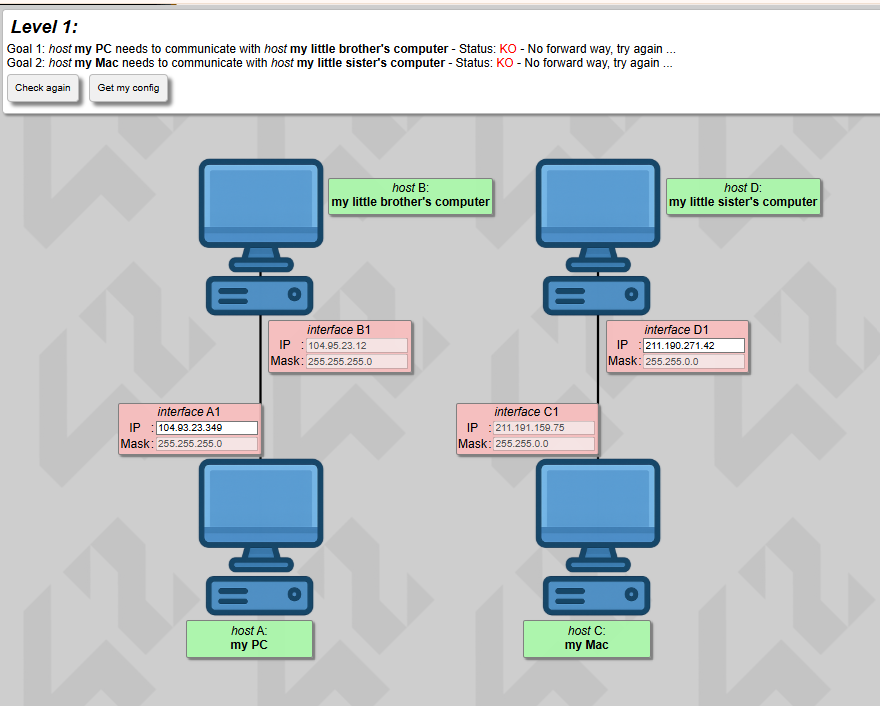
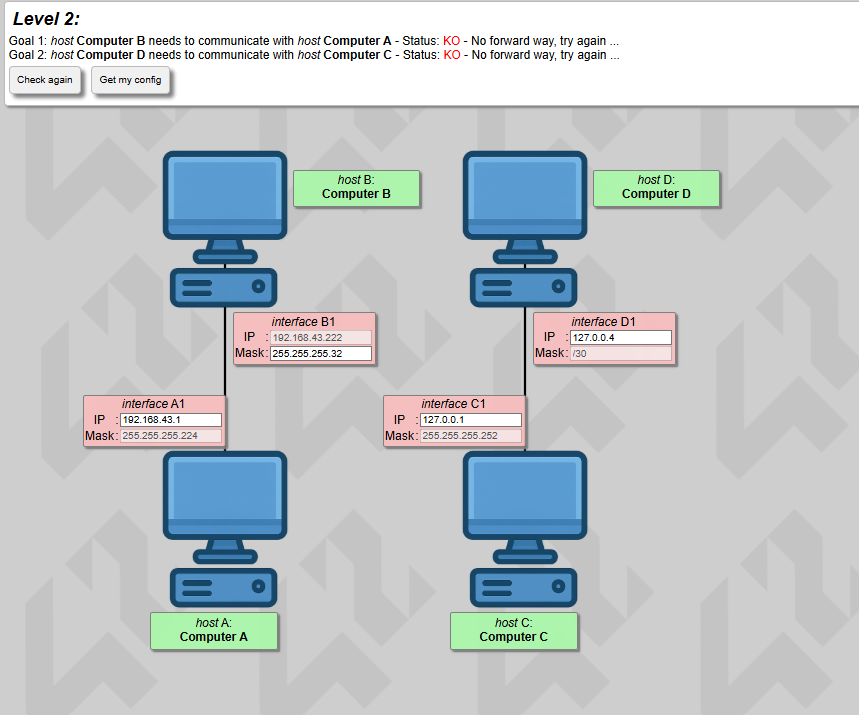
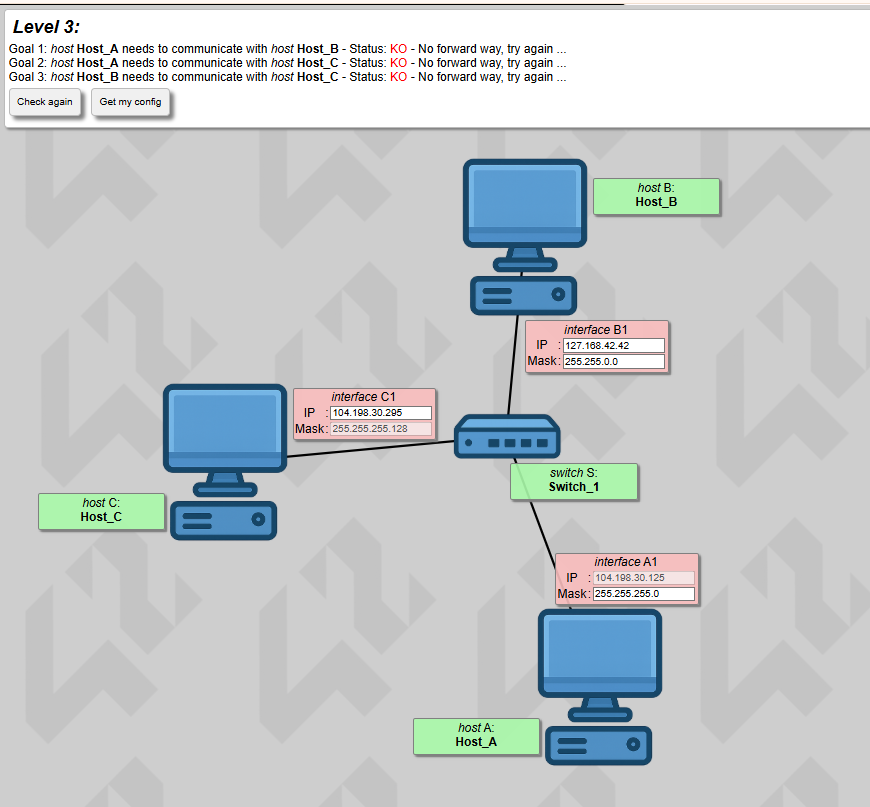
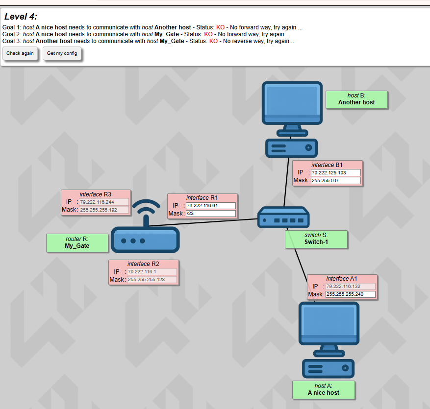
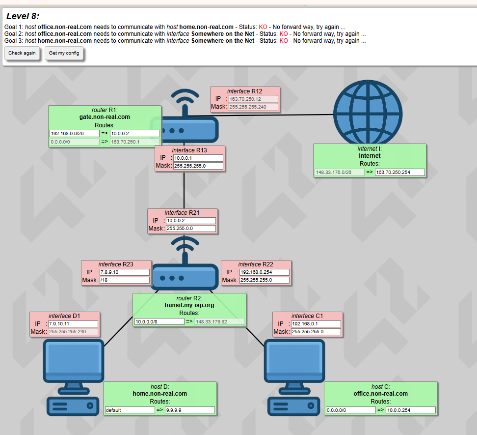
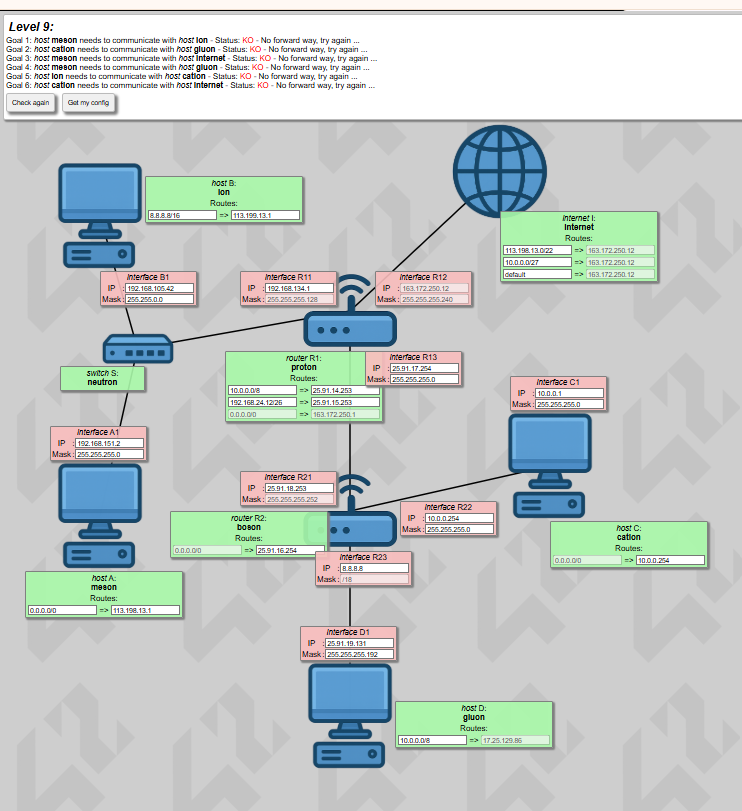

📖كيف تقرأ هذا الكتاب
الأرقام في NetPractice تتغيّر في كل محاولة، لكن القواعد ثابتة لا تتغيّر. لذلك لا تحفظ الإجابات. افهم القاعدة، وستحلّ أي نسخة من المستوى.
كل درس فيه:
- النظرية: المفاهيم التي يختبرك فيها المستوى.
- الحل: على نفس الأرقام التي ظهرت لك.
- كل الاحتمالات: الأشكال المختلفة التي قد يأتي بها المستوى.
- الخوارزمية: خطوات ثابتة تطبّقها على أي أرقام.
- المرصد: أدوات حساب تتأكد بها من حلّك.
جهازان، كابل واحد
أبسط شبكة ممكنة: جهازان متصلان مباشرة بسلك. المطلوب أن يتكلّما. ستتعلّم هنا كل ما يقوم عليه باقي المشروع: عنوان IP، والقناع، وشرط وجود جهازين في الشبكة نفسها.

🛰️1. فهم المهمة
على الشاشة شبكتان منفصلتان، في كل واحدة جهازان متصلان مباشرة:
مصطلحات الشاشة
| المصطلح | المعنى |
|---|---|
| Host (مضيف) | أي جهاز ينهي عنده الاتصال: حاسوب، هاتف، خادم. |
| Interface (واجهة) | منفذ الشبكة في الجهاز، أي "الباب" الذي يدخل منه السلك. لكل واجهة عنوان IP وقناع. |
| Goal | الهدف المطلوب، مثل "A يتواصل مع B". |
| Status: KO | الهدف لم يتحقق بعد. يصبح OK عند الحل الصحيح. |
| Check again | يفحص إعداداتك الحالية. |
| Get my config | يحفظ إعداداتك في ملف (تحتاجه لتسليم المشروع). |
في صورتك: A1 وD1 أبيضان (تعدّلهما)، وB1 وC1 والأقنعة كلها رمادية (ثابتة).
🌟2. عنوان IP: عنوان النجم في المجرّة
عنوان IPv4 رقم يميّز كل واجهة في الشبكة، كأنه عنوان بيت. يُكتب من 4 أجزاء بينها نقاط:
104 . 95 . 23 . 12
- كل جزء اسمه Octet (ثُمانية)، لأنه مكوّن من 8 بتات.
- المجموع: 4 × 8 = 32 بت.
- كل جزء قيمته من 0 إلى 255 فقط، ولا يجوز أن يتجاوز 255.
11111111 = 128+64+32+16+8+4+2+1 = 255. لا يوجد في 8 بتات رقم أكبر من ذلك.لذلك
104.93.23.349 و211.190.271.42 في صورتك عناوين مستحيلة. هذا هو الفخ الأول في المستوى.العنوان له جزءان
كل IP ينقسم إلى:
- جزء الشبكة (Network part): اسم "الحيّ". يجب أن يكون متطابقاً عند كل الأجهزة في الشبكة نفسها.
- جزء الجهاز (Host part): رقم "البيت" داخل الحي. يجب أن يكون مختلفاً لكل جهاز.
من يحدّد أين ينتهي جزء الشبكة ويبدأ جزء الجهاز؟ القناع (Mask).
🔢3. لغة الثنائي (Binary)
الحاسوب لا يرى 104، بل يرى 8 مصابيح، كل واحد مطفأ (0) أو مضاء (1). لكل خانة وزن:
تحويل عشري ← ثنائي (طريقة الطرح)
مثال: 104. امشِ على الأوزان من الأكبر: هل الوزن يدخل في الباقي؟ إذا نعم، اكتب 1 واطرحه. إذا لا، اكتب 0.
| الوزن | 128 | 64 | 32 | 16 | 8 | 4 | 2 | 1 |
|---|---|---|---|---|---|---|---|---|
| الباقي قبله | 104 | 104 | 40 | 8 | 8 | 0 | 0 | 0 |
| البت | 0 | 1 | 1 | 0 | 1 | 0 | 0 | 0 |
النتيجة: 104 = 01101000. للتأكد: 64+32+8 = 104 ✓
عنوان B1 كاملاً بالثنائي
الأزرق جزء الشبكة (أول 24 بت)، والبرتقالي جزء الجهاز (آخر 8 بتات). سترى لماذا في القسم التالي.
255.255.255.192، والثنائي هو الذي سيحلّها لك. لذلك تعلّمه الآن.🎭4. القناع (Subnet Mask)
القناع رقم من 32 بت أيضاً، شكله دائماً: سلسلة من 1 متتالية، ثم سلسلة من 0.
- كل بت 1 في القناع: البت المقابل في الـ IP من جزء الشبكة.
- كل بت 0 في القناع: البت المقابل من جزء الجهاز.
كتابة CIDR (الشَّرطة)
بدل كتابة القناع كاملاً، نكتب عدد الآحاد بعد شَرطة: 255.255.255.0 = /24 لأن فيه 24 بت بقيمة 1.
الأقنعة "الكاملة" في المستوى الأول
| القناع | CIDR | جزء الشبكة | جزء الجهاز | عدد الأجهزة الممكنة |
|---|---|---|---|---|
255.0.0.0 | /8 | الجزء الأول | آخر 3 أجزاء | 2²⁴ − 2 = 16,777,214 |
255.255.0.0 | /16 | أول جزأين | آخر جزأين | 2¹⁶ − 2 = 65,534 |
255.255.255.0 | /24 | أول 3 أجزاء | الجزء الأخير | 2⁸ − 2 = 254 |
255 في القناع، يجب أن يتطابق الجزء المقابل في العنوانين.وحيث يوجد
0، أنت حرّ في الاختيار، بشرط تجنّب حالتين محجوزتين (القسم التالي).نظرة مسبقة: القيم الممكنة لأي جزء في القناع
لأن الآحاد يجب أن تكون متتالية، لا يأخذ جزء القناع إلا 9 قيم:
| 0 | 128 | 192 | 224 | 240 | 248 | 252 | 254 | 255 |
|---|---|---|---|---|---|---|---|---|
| 00000000 | 10000000 | 11000000 | 11100000 | 11110000 | 11111000 | 11111100 | 11111110 | 11111111 |
أي قيمة أخرى (مثل 255.255.250.0) قناع غير صالح. هذا جدول ستحتاجه كثيراً من المستوى الثاني.
🌌5. عنوان الشبكة وعنوان البث
في كل شبكة عنوانان محجوزان لا يُعطيان لأي جهاز:
| العنوان | كيف يُصنع | مثال (104.95.23.12/24) |
|---|---|---|
| عنوان الشبكة (Network address) | كل بتات جزء الجهاز = 0 | 104.95.23.0 |
| عنوان البث (Broadcast) | كل بتات جزء الجهاز = 1 | 104.95.23.255 |
| العناوين الصالحة للأجهزة | كل ما بينهما | 104.95.23.1 → 104.95.23.254 |
عملية AND: كيف يحسب الجهاز عنوان الشبكة
يقارن الجهاز كل بت في الـ IP بالبت المقابل في القناع: 1 AND 1 = 1، وأي حالة أخرى = 0. بعبارة بسيطة: القناع "يُبقي" جزء الشبكة و"يمسح" جزء الجهاز.
| IP | 211.191.159.75 |
| AND Mask | 255.255.0.0 |
| = Network | 211.191.0.0 |
| Broadcast | 211.191.255.255 |
255، وضع 0 مكان الباقي فهذا عنوان الشبكة، وضع 255 مكانه فهذا عنوان البث.🔗6. قانون الاتصال المباشر
جهازان متصلان بسلك مباشرة (بلا راوتر) يتواصلان فقط إذا تحققت كل الشروط التالية:
- عناوين صالحة: كل جزء من 0 إلى 255.
- نفس القناع على الطرفين.
- نفس عنوان الشبكة: جزء الشبكة متطابق.
- عناوين مختلفة: لا يجوز أن يتطابق العنوانان.
- ليس عنوان شبكة ولا بث: جزء الجهاز ليس كله أصفاراً ولا كله آحاداً.
🚀7. حلّ المستوى خطوة بخطوة (أرقامك)
الهدف 1: A ↔ B
- ما الثابت؟
B1 = 104.95.23.12والقناع255.255.255.0(/24)، وكلاهما رمادي. - ما شبكة B؟ القناع /24 يعني أن أول 3 أجزاء للشبكة، فالشبكة
104.95.23.0والبث104.95.23.255. - ما الخطأ في A1؟
104.93.23.349فيه خطآن: الجزء الثاني 93 لا يساوي 95 (شبكة مختلفة)، والجزء الأخير 349 > 255 (غير صالح). - الحل: انسخ
104.95.23واختر جزءاً أخيراً من 1 إلى 254، بشرط ألا يكون 12.
الهدف 2: C ↔ D
- ما الثابت؟
C1 = 211.191.159.75والقناع255.255.0.0(/16). - ما شبكة C؟ /16 يعني أن أول جزأين فقط للشبكة: الشبكة
211.191.0.0والبث211.191.255.255. - ما الخطأ في D1؟
211.190.271.42: الجزء 190 لا يساوي 191، و271 > 255. - الحل: ابدأ بـ
211.191، والجزآن الأخيران حرّان (0 إلى 255 لكل منهما) مع تجنّب0.0و255.255و159.75.
🌠8. كل الاحتمالات التي قد تظهر لك
المستوى الأول يُولَّد عشوائياً، لكنه يأتي دائماً من هذه العائلات:
| # | الشكل | ماذا تفعل | مثال |
|---|---|---|---|
| 1 | IP طرف ثابت، والطرف الآخر IP قابل للتعديل، والقناع ثابت | انسخ جزء الشبكة من الثابت، وغيّر جزء الجهاز | ثابت 10.4.7.20/24 → 10.4.7.21 |
| 2 | الحقل القابل للتعديل في الطرف المقابل (B بدل A مثلاً) | نفس الطريقة: القاعدة دائماً "الرمادي هو المرجع" | — |
| 3 | القناع /8 | يكفي تطابق الجزء الأول فقط، والباقي حرّ | 45.200.3.9/8 → 45.1.1.1 |
| 4 | القناع /16 | تطابق أول جزأين | حالة الهدف 2 |
| 5 | القناع /24 | تطابق أول 3 أجزاء | حالة الهدف 1 |
| 6 | القيمة الابتدائية فيها رقم > 255 | فخ: صحّحه إلى رقم صالح | .349، .271 |
| 7 | القيمة الابتدائية من شبكة مختلفة | صحّح جزء الشبكة ليطابق الطرف الثابت | 93 → 95 |
| 8 | القيمة الابتدائية = عنوان الطرف الآخر نفسه | غيّر جزء الجهاز | تعارض عناوين |
| 9 | القيمة الابتدائية = عنوان الشبكة (كل الجهاز 0) | اختر رقماً بين الحدين | x.x.x.0 مع /24 |
| 10 | القيمة الابتدائية = عنوان البث (كل الجهاز 255) | اختر رقماً بين الحدين | x.x.x.255 مع /24 |
| 11 | القناع نفسه قابل للتعديل | اجعله مطابقاً لقناع الطرف الآخر | يظهر في مستويات لاحقة |
| 12 | الحقلان (IP الطرفين) قابلان للتعديل | أنت حرّ: اختر أي شبكة صالحة وأعطِ الطرفين عنوانين مختلفين فيها | 192.168.1.1 و192.168.1.2 /24 |
- مع /16، الجزء الثالث قد يكون
0أو255، وهذا مقبول. مثلاً211.191.0.5و211.191.255.1صالحان. الممنوع فقط كل جزء الجهاز صفراً (0.0) أو كله 255 (255.255). - مع /8، العنوان
45.0.0.1صالح، أما45.0.0.0فعنوان الشبكة. - تجنّب العناوين التي تبدأ بـ
127(محجوزة للجهاز نفسه، loopback) أو0أو 224 فما فوق. في المستوى الأول يفرض الرمادي عليك البداية غالباً، فلن تقع في هذا.
🧭9. الخوارزمية العامة: تحلّ أي أرقام
- حدّد الحقول الرمادية. هي المرجع.
- اقرأ القناع وحوّله إلى CIDR: عدد الـ
255× 8. - احسب عنوان الشبكة للطرف الثابت: انسخ الأجزاء المقابلة لـ 255، وصفّر الباقي.
- احسب عنوان البث: نفس الشيء، لكن ضع 255 مكان الأجزاء الحرّة.
- في الحقل الأبيض: انسخ جزء الشبكة كما هو.
- اختر جزء جهاز بحيث يكون العنوان: أكبر من عنوان الشبكة، وأصغر من عنوان البث، ومختلفاً عن عنوان الطرف الآخر.
- تأكد أن كل الأجزاء بين 0 و255، وأن القناعين متطابقان.
- اضغط Check again.
🔭10. مرصد الحساب
أدخل أي أرقام تظهر لك في اللعبة، وتحقّق قبل أن تضغط Check.
🪐 محلّل العنوان
🔗 فاحص الاتصال بين واجهتين
☄️11. أخطاء شائعة
| الخطأ | لماذا خطأ |
|---|---|
| تعديل الحقل الأبيض دون النظر إلى الرمادي | الرمادي لا يتغيّر، فهو الذي يحدّد الشبكة. |
| إبقاء رقم مثل 349 أو 271 | أي جزء > 255 مستحيل. |
| نسخ عنوان الطرف الآخر حرفياً | عنوانان متطابقان = تعارض. |
إنهاء العنوان بـ .0 أو .255 مع /24 | هذان عنوان الشبكة والبث. |
| الظن أن /16 يتطلب تطابق 3 أجزاء | /16 = جزآن فقط. الثالث والرابع حرّان. |
| نسيان Get my config | ستحتاج الملفات في التسليم. |
🏋️12. تمارين (بأرقام مختلفة)
تمرين 1: B1 ثابت = 192.168.10.5 /24، وA1 قابل للتعديل
192.168.10.0. أي عنوان 192.168.10.X حيث X من 1 إلى 254 وX ≠ 5. مثال: 192.168.10.6.تمرين 2: D1 ثابت = 74.12.0.1 قناع 255.255.0.0، وC1 يبدأ بـ 74.21.300.8
21 بدل 12، و300 > 255. الحل: 74.12.Y.Z، مثل 74.12.0.2 أو 74.12.50.50. ممنوع: 74.12.0.0 و74.12.255.255 و74.12.0.1.تمرين 3: هل 88.4.2.255 /24 عنوان صالح لجهاز؟
88.4.2.0.تمرين 4: B1 ثابت = 45.200.3.9 قناع 255.0.0.0
45. أمثلة صحيحة: 45.1.1.1، 45.200.3.10، 45.0.0.1. ممنوع 45.0.0.0 و45.255.255.255.تمرين 5: أي هذه العناوين صالح لجهاز في 150.20.7.0/24؟ 150.20.7.0 · 150.20.7.256 · 150.20.8.4 · 150.20.7.99
150.20.7.99 فقط. الأول عنوان الشبكة، والثاني فيه 256، والثالث في شبكة 150.20.8.0.تمرين 6: 211.191.0.0 مع /16، هل يصلح لـ D1؟ وماذا عن 211.191.0.255؟
0.0 = عنوان الشبكة). الثاني نعم: جزء الجهاز 0.255 ليس كله أصفاراً ولا كله آحاداً.تقسيم الحيّ إلى شوارع
نفس الشبكة البسيطة (جهازان وكابل)، لكن الأقنعة لم تعد كاملة: /27 و/30. ستتعلّم تقسيم الجزء الأخير إلى «كتل»، وتمييز القناع المزيّف، والعناوين التي لا تُستخدم أبداً.

/30.🧳ما الجديد هنا؟ (وما نأخذه من الكوكب الأول)
نفترض أنك أنهيت المستوى الأول. هذه المفاهيم لن نعيد شرحها:
| المفهوم | أين شُرح |
|---|---|
| الحقل الأبيض والحقل الرمادي | المستوى 1 · §1 |
| الثنائي وأوزان البتات | المستوى 1 · §3 |
| القناع وCIDR وجدول القيم التسع | المستوى 1 · §4 |
| عنوان الشبكة والبث وعملية AND | المستوى 1 · §5 |
| الشروط الخمسة للاتصال المباشر | المستوى 1 · §6 |
| مرصد الحساب (يعمل مع أي قناع) | المستوى 1 · §10 |
الجديد في هذا الكوكب:
- أقنعة يكون فيها جزء ليس 255 ولا 0، مثل
224و252. - حجم الكتلة: طريقة سريعة لحساب الشبكة والبث دون ثنائي.
- القناع نفسه قد يكون خاطئاً وقابلاً للتعديل.
- القناع قد يُكتب بصيغة
/30بدل255.255.255.252. - عناوين محجوزة لا تعمل أبداً مهما كان القناع، مثل
127.x.x.x.
🌗1. الأقنعة غير الكاملة
في المستوى الأول كانت الحدود بين الشبكة والجهاز تقع بين الأجزاء (بعد 8 أو 16 أو 24 بتاً). الآن الحدّ يقع داخل جزء واحد: بعض بتات الجزء الأخير للشبكة، وبعضها للجهاز.
مثال: /27 = 255.255.255.224
أول 3 بتات من الجزء الأخير (110) تابعة للشبكة، وآخر 5 (11110) للجهاز. إذن جزء الجهاز = 5 بتات، وعدد العناوين = 2⁵ = 32، منها 30 صالحة للأجهزة.
جدول الأقنعة على الجزء الأخير
| CIDR | القناع | بتات الجهاز | حجم الكتلة | أجهزة صالحة | عدد الكتل في 256 |
|---|---|---|---|---|---|
/24 | 255.255.255.0 | 8 | 256 | 254 | 1 |
/25 | 255.255.255.128 | 7 | 128 | 126 | 2 |
/26 | 255.255.255.192 | 6 | 64 | 62 | 4 |
/27 | 255.255.255.224 | 5 | 32 | 30 | 8 |
/28 | 255.255.255.240 | 4 | 16 | 14 | 16 |
/29 | 255.255.255.248 | 3 | 8 | 6 | 32 |
/30 | 255.255.255.252 | 2 | 4 | 2 | 64 |
/30 هو أصغر قناع يتّسع لجهازين بالضبط، لذلك ستراه كثيراً في الروابط بين جهازين أو بين راوترين./20 = 255.255.240.0: الجزء الثالث فيه كتل بحجم 16، والجزء الرابع كله حرّ (0–255). ستجد مثالاً في التمارين.✨2. حجم الكتلة: الرقم السحري
الطريقة الأسرع لحلّ أي قناع غير كامل، بلا تحويل للثنائي:
- خذ الجزء من القناع الذي ليس 255 ولا 0 (مثلاً
224). هذا الجزء اسمه «الجزء المهم». - حجم الكتلة = 256 − قيمة ذلك الجزء. مثال: 256 − 224 = 32.
- الكتل تبدأ عند مضاعفات حجم الكتلة:
0, 32, 64, 96, 128, 160, 192, 224. - خذ الجزء المقابل في الـ IP (مثلاً
222) وابحث عن أكبر مضاعف لا يتجاوزه: 192. هذه بداية الكتلة = عنوان الشبكة. - البث = البداية + حجم الكتلة − 1 = 192 + 32 − 1 = 223.
- العناوين الصالحة: من البداية + 1 إلى البث − 1، أي
193→222.
222 ÷ 32 = 6.93، نأخذ الجزء الصحيح 6، و6 × 32 = 192.
للتأكد بالثنائي (عملية AND من المستوى 1 · §5)
| 222 | 1101 1110 |
| AND 224 | 1110 0000 |
| = 192 | 1100 0000 |
📏3. مسطرة الكتل
تقسّم هذه الأداة الأعداد من 0 إلى 255 إلى كتل حسب القناع، وتضيء الكتلة التي يقع فيها رقمك.
🎭4. القناع غير الصالح
في صورتك، قناع B1 هو 255.255.255.32. رقم 32 بالثنائي:
القناع يجب أن يكون آحاداً متتالية من اليسار. هنا يوجد 1 وحيد في منتصف أصفار، فهذا ليس قناعاً. و32 ليست من القيم التسع المسموحة (الجدول في المستوى 1 · §4).
/27، وليس القناع نفسه. اللعبة تخلط بينهما عمداً. القناع الصحيح هو 256 − 32 = 224.صيغتا كتابة القناع
اللعبة تقبل الصيغتين في أي حقل قناع: 255.255.255.252 أو /30. وهما الشيء نفسه تماماً.
🚫5. العناوين المحجوزة
بعض النطاقات لا تعمل أبداً لجهاز في NetPractice، حتى لو كانت الحسابات كلها صحيحة:
| النطاق | الاسم | لماذا ممنوع |
|---|---|---|
127.0.0.0/8 | Loopback | كل عنوان يبدأ بـ 127 يعني «هذا الجهاز نفسه». الرسالة لا تخرج من الجهاز أصلاً، فلا تصل للطرف الآخر. |
0.0.0.0/8 | «هذه الشبكة» | محجوز، لا يُعطى لجهاز. |
224.0.0.0 → 239.255.255.255 | Multicast | للإرسال الجماعي، لا لجهاز واحد. |
240.0.0.0 فما فوق | محجوز للمستقبل | غير مستخدم. |
10.0.0.0/8 و172.16.0.0/12 و192.168.0.0/16. ستعود إليها في المستويات التي فيها «الإنترنت»، لأنها لا تصلح هناك.🚀6. حلّ المستوى خطوة بخطوة (أرقامك)
الهدف 1: B ↔ A
| الحقل | القيمة | الحالة |
|---|---|---|
| A1 IP | 192.168.43.1 | ⚪ قابل للتعديل |
| A1 Mask | 255.255.255.224 | 🔒 ثابت |
| B1 IP | 192.168.43.222 | 🔒 ثابت |
| B1 Mask | 255.255.255.32 | ⚪ قابل للتعديل |
- القناع: قناع A1 الثابت هو
/27، وقناع B1 غير صالح (§4). اجعل قناع B1 =255.255.255.224. - كتلة B1: حجم الكتلة 32، و222 تقع في الكتلة التي تبدأ عند 192. إذن الشبكة
192.168.43.192والبث192.168.43.223. - مشكلة A1:
.1تقع في الكتلة 0–31، أي شبكة192.168.43.0، وهي شبكة مختلفة عن شبكة B1 رغم أن أول 3 أجزاء متطابقة! - الحل: A1 بين
.193و.221(لأن.222مأخوذ).
الهدف 2: D ↔ C
| الحقل | القيمة | الحالة |
|---|---|---|
| C1 IP | 127.0.0.1 | ⚪ قابل للتعديل |
| C1 Mask | 255.255.255.252 | 🔒 ثابت |
| D1 IP | 127.0.0.4 | ⚪ قابل للتعديل |
| D1 Mask | /30 | 🔒 ثابت (نفس 255.255.255.252) |
- القناعان متطابقان:
/30، حجم الكتلة 4، وكل كتلة فيها جهازان فقط. - المشكلة الأولى: كلا العنوانين يبدأ بـ
127، وهذا نطاق Loopback المحجوز (§5). يجب تغيير البداية. - المشكلة الثانية: حتى لو تجاهلنا 127، فـ
.1في الكتلة 0–3 و.4هو عنوان الشبكة للكتلة 4–7. - الحل: كلا الـ IP أبيض، فأنت حرّ. اختر أي كتلة /30 في نطاق عادي، وأعطِ الطرفين الرقمين الأوسطين فيها.
.1/.2، .5/.6، .9/.10، .13/.14… أي 4k+1 و4k+2. أما .2/.3 فخطأ (.3 بث)، و.3/.4 خطأ (كتلتان مختلفتان).🌠7. كل الاحتمالات في المستوى الثاني
| # | الشكل | ماذا تفعل |
|---|---|---|
| 1 | قناع أبيض غير صالح (مثل .32 أو .250) | انسخ قناع الطرف الآخر الثابت |
| 2 | قناع أبيض صالح لكنه مختلف عن الطرف الآخر | انسخ القناع الثابت |
| 3 | القناعان أبيضان | اختر قناعاً يجعل العنوانين في كتلة واحدة، أو غيّر العناوين أيضاً |
| 4 | أول 3 أجزاء متطابقة لكن الجزء الأخير في كتلة أخرى | احسب كتلة الطرف الثابت وضع الآخر داخلها |
| 5 | عنوان أبيض = بداية كتلة (شبكة) أو نهايتها (بث) | حرّكه إلى داخل الكتلة |
| 6 | عنوان يبدأ بـ 127 أو 0 أو ≥ 224 | غيّر النطاق كله، واختر مثلاً 192.168.x.x أو 10.x.x.x |
| 7 | القناع مكتوب /n عند طرف ومنقّط عند الآخر | حوّل وقارن، فقد يكونان متطابقين أصلاً |
| 8 | الطرفان أبيضان مع /30 | زوج 4k+1 و4k+2 |
| 9 | القناع غير الكامل في الجزء الثالث (/17–/23) | طبّق حجم الكتلة على الجزء الثالث، والجزء الرابع حرّ (0–255) |
| 10 | القناع غير الكامل في الجزء الثاني (/9–/15) | نفس الطريقة على الجزء الثاني، والجزآن الأخيران حرّان |
🧭8. الخوارزمية المحدّثة
هذه نسخة موسّعة من خوارزمية المستوى 1 · §9، تعمل مع أي قناع:
- صحّح القناع أولاً: إن كان أبيض وغير صالح أو مختلفاً، انسخ القناع الثابت.
- افحص النطاق: إن كان أي عنوان أبيض يبدأ بـ 127 أو 0 أو ≥ 224، غيّر بدايته.
- حدّد الجزء المهم في القناع (ليس 255 ولا 0). إن لم يوجد، فالقناع كامل: ارجع لطريقة المستوى 1.
- احسب حجم الكتلة = 256 − الجزء المهم.
- احسب بداية الكتلة للطرف الثابت = ⌊رقمه ÷ الكتلة⌋ × الكتلة. والأجزاء بعد الجزء المهم = 0.
- البث = البداية + الكتلة − 1. والأجزاء بعد الجزء المهم = 255.
- ضع العنوان الأبيض بين البداية والبث، ومختلفاً عن الطرف الآخر.
- تحقّق في مرصد الحساب، ثم Check again.
.222 فيصبح A1 = .221. لكن تأكد ألا تنزل إلى بداية الكتلة.☄️9. أخطاء شائعة
| الخطأ | لماذا خطأ |
|---|---|
| «أول 3 أجزاء متطابقة إذن هما في نفس الشبكة» | صحيح فقط مع /24. مع /27، .1 و.222 في شبكتين مختلفتين. |
كتابة حجم الكتلة مكان القناع (.32) | القناع = 256 − الكتلة = .224. |
إبقاء 127.x.x.x لأن الحسابات صحيحة | Loopback لا يغادر الجهاز أبداً. |
في /30 استخدام .0 و.1 | .0 عنوان الشبكة. الصحيح .1 و.2. |
نسيان أن /30 = 255.255.255.252 | الصيغتان متكافئتان. |
🏋️10. تمارين
تمرين 1: B1 ثابت = 10.1.1.100 قناع /26. ما النطاق المسموح لـ A1؟
10.1.1.64 والبث 10.1.1.127. A1 من .65 إلى .126 ما عدا .100.تمرين 2: قناع أبيض 255.255.255.16 والطرف الآخر ثابت على 255.255.255.240
/28. القناع الصحيح 255.255.255.240.تمرين 3: 172.16.5.47 مع /29، هل يصلح لجهاز؟
تمرين 4: الطرفان أبيضان والقناع /30. هل 192.168.0.6 و192.168.0.7 صحيحان؟
.7 هو البث. الصحيح .5 و.6.تمرين 5: B1 ثابت = 10.20.37.5 قناع 255.255.240.0
10.20.32.0 والبث 10.20.47.255. A1 أي عنوان بين 10.20.32.1 و10.20.47.254، مثلاً 10.20.40.40.تمرين 6: C1 = 127.0.0.1 وD1 = 127.0.0.2 مع /30. الحسابات صحيحة، فلماذا KO؟
127.x.x.x نطاق Loopback. غيّرهما مثلاً إلى 10.0.0.1 و10.0.0.2.محطّة الفضاء: ثلاثة أجهزة ومحوّل
لم يعد الاتصال سلكاً بين جهازين. الآن ثلاثة أجهزة متصلة بـ محوّل (Switch) واحد، وثلاثة أهداف يجب أن تنجح معاً. ستتعلّم كيف تجمع القيود الثابتة المتفرقة في حلّ واحد.

🧳ما الجديد هنا؟ (وما نأخذه من الكواكب السابقة)
| نستخدمه دون إعادة شرح | أين شُرح |
|---|---|
| رقم أكبر من 255 غير صالح | المستوى 1 · §2 |
| الشروط الخمسة للاتصال المباشر | المستوى 1 · §6 |
| حجم الكتلة وحساب الشبكة والبث | المستوى 2 · §2 |
جدول الأقنعة /24–/30 وعدد الأجهزة | المستوى 2 · §1 |
127.x.x.x محجوز (Loopback) | المستوى 2 · §5 |
الجديد في هذا الكوكب:
- المحوّل (Switch): ما هو، وماذا يفعل، وما الذي لا يفعله.
- كل الأجهزة على محوّل واحد = شبكة واحدة بقناع واحد.
- جمع القيود: الثابت عند جهاز يفرض نفسه على كل الأجهزة.
- اختيار قناع يتّسع لعدد الأجهزة ولعنوانين ثابتين معاً.
- لمحة عن عنوان MAC وطبقات الشبكة.
🛰️1. المحوّل (Switch): محطّة توزيع
و Host_C متصل بنفس المحوّل أيضاً
المحوّل جهاز يجمع عدة أسلاك في نقطة واحدة. عندما يرسل جهاز رسالة، يوصلها المحوّل إلى المنفذ الذي يقع خلفه الجهاز المقصود.
| المحوّل… | |
|---|---|
| ✅ يربط أجهزة الشبكة نفسها ببعضها | كأنه سلك متفرّع لعدة أطراف. |
| ❌ ليس له عنوان IP ولا قناع في NetPractice | لذلك لا تجد عنده أي حقل. |
| ❌ لا يربط شبكتين مختلفتين | هذا عمل الموجّه (Router)، وهو موضوع الكوكب القادم. |
3C:52:82:1A:9F:04. المحوّل يعمل بعناوين MAC، وليس بعناوين IP. لذلك يُقال إنه يعمل في الطبقة الثانية (Data Link)، بينما IP في الطبقة الثالثة (Network). لن تكتب MAC في المشروع أبداً، لكن هذا يفسّر لماذا لا يملك المحوّل IP.🌐2. شبكة واحدة = قناع واحد
بما أن المحوّل لا يغيّر شيئاً، فكل الأجهزة المتصلة به يجب أن تحقق شروط المستوى 1 · §6 مع كل جهاز آخر:
- نفس القناع عند الجميع.
- نفس عنوان الشبكة عند الجميع، أي داخل نفس الكتلة.
- كل العناوين مختلفة عن بعضها، وليست عنوان شبكة ولا بث.
🧩3. جمع القيود من كل الأهداف
في المستوى الأول والثاني كان كل ما تحتاجه موجوداً في الطرف المقابل. الآن الحقائق الثابتة متفرّقة، وعليك جمعها:
- اكتب قائمة بكل حقل رمادي في الشاشة كلها.
- كل قناع ثابت يصبح قناع الجميع.
- كل IP ثابت يحدّد الكتلة التي يجب أن يكون الجميع داخلها، وذلك بعد معرفة القناع.
- ثم املأ كل الحقول البيضاء لتتوافق مع هذه القيود.
📐4. القناع الذي يتّسع للجميع
إذا كان القناع قابلاً للاختيار (لا قناع ثابت في أي مكان)، فاختياره يخضع لشرطين:
الشرط 1: السعة
عدد الأجهزة الصالحة في الكتلة يجب أن يكون ≥ عدد الأجهزة على المحوّل. ارجع لعمود «أجهزة صالحة» في جدول المستوى 2 · §1:
- جهازان: يكفي
/30. - 3 إلى 6 أجهزة:
/29أو أكبر. - 7 إلى 14 جهازاً:
/28أو أكبر.
الشرط 2: عنوانان ثابتان في كتلة واحدة
إذا كان عنوانان ثابتين، فالقناع يجب أن يضعهما في الكتلة نفسها. الطريقة: اكتب الجزء المختلف بالثنائي، وعُدّ البتات المشتركة من اليسار.
| 10.0.0.10 | 00001010 |
| 10.0.0.14 | 00001110 |
| common bits | 24 + 5 = 29 → /29 max |
البتات متطابقة حتى البت الخامس من الجزء الأخير، فأصغر شبكة تجمعهما هي /29 (الكتلة 8–15). أي قناع أصغر رقماً، مثل /28 أو /24، يجمعهما أيضاً. أما /30 فيفرّقهما.
🔭5. مرصد المحوّل
🔀 فاحص شبكة المحوّل (أي عدد من الأجهزة)
سطر لكل واجهة: IP ثم مسافة ثم القناع (منقّط أو /n).
📐 أصغر شبكة تجمع عنوانين ثابتين
🚀6. حلّ المستوى خطوة بخطوة (أرقامك)
الخطوة 1: جرد الحقول
| الواجهة | IP | Mask |
|---|---|---|
| A1 | 🔒 104.198.30.125 | ⚪ 255.255.255.0 |
| B1 | ⚪ 127.168.42.42 | ⚪ 255.255.0.0 |
| C1 | ⚪ 104.198.30.295 | 🔒 255.255.255.128 |
- القيود الثابتة: IP واحد ثابت (
A1 = 104.198.30.125) وقناع واحد ثابت (C1 = /25). - القناع للجميع: قناع C1 ثابت، إذن قناع A1 وB1 =
255.255.255.128. - الكتلة: حجم الكتلة = 256 − 128 = 128، و125 تقع في الكتلة 0–127. الشبكة
104.198.30.0والبث104.198.30.127. - السعة: /25 فيه 126 جهازاً، ونحتاج 3. يكفي.
- B1: عنوانه يبدأ بـ
127(Loopback) وفي شبكة أخرى. ضعه داخل الكتلة، مثلاً104.198.30.1. - C1:
295 > 255. ضعه داخل الكتلة، مثلاً104.198.30.2.
104.198.30.1 إلى 104.198.30.126، ما عدا .125 (عنوان A1)./24 يبدو صحيحاً، لأن .125 و.1 في نفس /24. لكن C1 مثبّت على /25، والقناعات يجب أن تتطابق. ابحث دائماً عن القناع الثابت في الشاشة كلها.🌠7. كل الاحتمالات في المستوى الثالث
| # | الشكل | ماذا تفعل |
|---|---|---|
| 1 | قناع ثابت عند جهاز، وIP ثابت عند آخر (حالتك) | القناع للجميع، والكتلة من الـ IP الثابت |
| 2 | قناعان ثابتان عند جهازين | هما متطابقان حتماً في مستوى قابل للحل، فانسخه للثالث |
| 3 | لا قناع ثابت أبداً | اختر قناعاً بشرطي السعة والعناوين الثابتة (§4). /24 غالباً أسهل خيار |
| 4 | عنوانان ثابتان أو أكثر | احسب أصغر شبكة تجمعهما (§4). القناع الثابت يجب أن يكون مساوياً لها أو أكبر شبكةً |
| 5 | لا IP ثابت أبداً | أنت حرّ: اختر كتلة صالحة وأعطِ كل جهاز عنواناً مختلفاً فيها |
| 6 | القناع الثابت صغير جداً (/30) مع 3 أجهزة | مستحيل (جهازان فقط في الكتلة)، فهذا لن يظهر في مستوى صحيح. إن ظننته ظهر، فراجع قراءتك |
| 7 | عنوان أبيض = عنوان جهاز آخر | غيّره (تعارض) |
| 8 | عنوان أبيض غير صالح (>255، 127، شبكة، بث) | صحّحه داخل الكتلة |
| 9 | أكثر من 3 أجهزة على محوّل واحد | نفس القواعد تماماً، مع حساب السعة |
🧭8. الخوارزمية المحدّثة
تضيف هذه النسخة خطوة «الجرد» قبل خوارزمية المستوى 2 · §8:
- ارسم حدود الشبكة: كل الأجهزة المتصلة بنفس المحوّل (أو بنفس السلك) = شبكة واحدة.
- اجرد الثوابت داخل هذه الشبكة: كل قناع رمادي وكل IP رمادي.
- حدّد القناع: الرمادي إن وُجد، وإلا فاختر قناعاً بشرطي السعة والعناوين الثابتة.
- حدّد الكتلة من أي IP ثابت (حجم الكتلة، والبداية، والبث).
- املأ كل الأقنعة البيضاء بنفس القناع.
- وزّع عناوين مختلفة داخل الكتلة على كل IP أبيض.
- تحقّق في مرصد المحوّل، ثم Check again.
☄️9. أخطاء شائعة
| الخطأ | لماذا خطأ |
|---|---|
| البحث عن حقل IP للمحوّل | المحوّل لا يملك IP ولا قناعاً. |
| حلّ هدف A↔B ثم A↔C بأقنعة مختلفة | الأجهزة الثلاثة شبكة واحدة، فيجب أن يكون القناع واحداً للجميع. |
| الاكتفاء بقناع الطرف المقابل كما في المستوى 1 | القناع الثابت قد يكون عند جهاز ثالث. |
| إعطاء جهازين العنوان نفسه | تعارض: كل واجهة لها عنوان فريد. |
| قناع ضيّق لا يتّسع لكل الأجهزة | راجع شرط السعة في §4. |
🏋️10. تمارين
تمرين 1: محوّل عليه A وB وC. الثابت: IP عند B = 192.168.5.70، وقناع عند A = /26
255.255.255.192، وA وC بين .65 و.126 (ليس .70). مثلاً .65 و.66.تمرين 2: لا قناع ثابت. عنوانان ثابتان: 10.0.0.10 و10.0.0.14، وجهاز ثالث أبيض
/29 (الكتلة 8–15، والعناوين الصالحة 9–14). الجهاز الثالث يأخذ .9 أو .11 أو .12 أو .13. أو استخدم /24 للجميع لتحصل على حرية أكبر.تمرين 3: عنوانان ثابتان 172.16.1.60 و172.16.1.70، وقناع ثابت /26. هل يمكن الحل؟
/25.تمرين 4: 5 أجهزة على محوّل، ولا شيء ثابت. ما أصغر قناع يكفي؟
/29 (6 أجهزة صالحة). مثال: 10.0.0.1 → 10.0.0.5 بقناع 255.255.255.248.تمرين 5: IP ثابت 88.88.88.64، وقناع ثابت عند جهاز آخر /26
البوابة النجمية: أول موجّه
ظهر الموجّه (Router)، وهو جهاز له عدة واجهات، كل واحدة منها في شبكة مختلفة. الأهم هنا ليس فقط ما هو متصل، بل المساحة التي تحجزها الواجهات الأخرى حتى لو لم يكن بها سلك.

🧳ما الجديد هنا؟ (وما نأخذه من الكواكب السابقة)
| نستخدمه دون إعادة شرح | أين شُرح |
|---|---|
| حجم الكتلة والشبكة والبث | المستوى 2 · §2 |
| جدول الأقنعة وعدد الأجهزة | المستوى 2 · §1 |
| المحوّل = شبكة واحدة بقناع واحد | المستوى 3 · §2 |
| جمع القيود الثابتة المتفرّقة | المستوى 3 · §3 |
| شرط السعة واختيار القناع | المستوى 3 · §4 |
الجديد في هذا الكوكب:
- الموجّه (Router): عدة واجهات، وكل واجهة في شبكة مختلفة.
- قانون عدم التداخل: شبكات واجهات الموجّه لا تتقاطع أبداً.
- الواجهة غير المتصلة تحجز مساحتها من العناوين.
- خريطة العناوين: إيجاد «الفراغ» المتاح واختيار قناع يناسبه.
- رسالتا الخطأ No forward way وNo reverse way.
🌀1. الموجّه (Router): بوابة بين المجرّات
الموجّه جهاز يملك عدة واجهات، وكل واجهة «قدم» في شبكة مختلفة. وظيفته نقل الرسائل من شبكة إلى أخرى، وهو ما لا يستطيعه المحوّل (المستوى 3 · §1).
| المقارنة | المحوّل (Switch) | الموجّه (Router) |
|---|---|---|
| له IP وقناع؟ | ❌ لا | ✅ لكل واجهة IP وقناع |
| عدد الشبكات | شبكة واحدة | شبكة لكل واجهة |
| يعمل بـ | MAC (الطبقة 2) | IP (الطبقة 3) |
| يربط شبكات مختلفة؟ | ❌ | ✅ |
واجهة الموجّه = جهاز عادي في شبكتها
بالنسبة لشبكة المحوّل، الواجهة R1 مجرد «جهاز» آخر عليه. لذلك تطبّق عليها كل قواعد المستوى 3 · §2: نفس القناع ونفس الشبكة وعنوان فريد، وهي تُحسب في السعة.
⛔2. قانون عدم التداخل
شبكات واجهات الموجّه الواحد يجب أن تكون منفصلة تماماً: لا يشترك عنوان واحد بين شبكتين منها.
لماذا؟ إذا وصلت رسالة إلى عنوان يقع في شبكتين، فلن يعرف الموجّه من أي «باب» يخرجها.
كيف تكتشف التداخل؟
احسب لكل واجهة من (عنوان الشبكة) وإلى (عنوان البث)، ثم تأكد أن النطاقات لا تتقاطع.
🗺️3. خريطة العناوين والفراغات
عندما تشترك الشبكات في نفس البداية (هنا 79.222.116.x)، ارسم الجزء الأخير كمسطرة من 0 إلى 255، ولوّن ما هو محجوز:
الفراغ المتاح هو 128–191، أي كتلة /26 بالضبط. شبكة المحوّل (A1 وB1 وR1) يجب أن تقع كاملة داخل هذا الفراغ.
أي قناع يناسب؟
| القناع | الكتلة التي تحتوي .132 | داخل الفراغ؟ | .132 صالح؟ | يتّسع لـ 3؟ | النتيجة |
|---|---|---|---|---|---|
/23 (الحالي عند R1) | 116.0 → 117.255 | ❌ يبتلع R2 وR3 | ✅ | ✅ | ❌ |
/24 | 0 → 255 | ❌ | ✅ | ✅ | ❌ |
/25 | 128 → 255 | ❌ يحتوي R3 | ✅ | ✅ | ❌ |
/26 | 128 → 191 | ✅ | ✅ | ✅ (62) | ✅ |
/27 | 128 → 159 | ✅ | ✅ | ✅ (30) | ✅ |
/28 | 128 → 143 | ✅ | ✅ | ✅ (14) | ✅ |
/29 | 128 → 135 | ✅ | ✅ | ✅ (6) | ✅ |
/30 | 132 → 135 | ✅ | ❌ .132 عنوان شبكة | ❌ (2) | ❌ |
أي قناع من /26 إلى /29 ينجح. وبما أن قناع A1 الأبيض هو أصلاً /28، فهو الخيار الأسهل.
↔️4. Forward way و Reverse way
كل اتصال رحلتان: ذهاب من المرسل إلى المستقبل، وإياب للردّ.
| الرسالة | المعنى | أين تبحث |
|---|---|---|
| No forward way | المرسل لا يجد طريقاً للذهاب | إعدادات المرسل: عنوانه وقناعه، وهل الهدف في شبكته |
| No reverse way | الذهاب ممكن، لكن الردّ لا يعود | إعدادات المستقبل: هل يرى المرسل في شبكته؟ |
في صورتك، الهدف 3 (Another host → My_Gate) يعطي reverse. السبب أن B1 بقناع /16 «يرى» R1 في شبكته فيرسل، لكن R1 بقناعه وعنوانه لا يرى B1 في شبكته، فلا يعود الرد.
🔭5. مرصد الموجّه
🗺️ باحث الفراغ: أي قناع يناسب شبكتي؟
الشبكات المحجوزة (واجهات الموجّه الأخرى): سطر لكل واجهة.
ولفحص شبكة المحوّل بعد الحل، استخدم فاحص المحوّل · المستوى 3 وضع فيه R1 وA1 وB1.
🚀6. حلّ المستوى خطوة بخطوة (أرقامك)
الخطوة 1: جرد الحقول
| الواجهة | IP | Mask | متصلة بـ |
|---|---|---|---|
| R1 | ⚪ 79.222.116.91 | ⚪ /23 | المحوّل |
| R2 | 🔒 79.222.116.1 | 🔒 /25 | لا شيء |
| R3 | 🔒 79.222.116.244 | 🔒 /26 | لا شيء |
| A1 | 🔒 79.222.116.132 | ⚪ /28 | المحوّل |
| B1 | ⚪ 79.222.125.193 | ⚪ /16 | المحوّل |
- حدود الشبكات: R1 وA1 وB1 على محوّل واحد، فهي شبكة واحدة. وR2 وR3 شبكتان أخريان للموجّه.
- المساحة المحجوزة: R2 =
116.0–127، وR3 =116.192–255. الفراغ المتاح:116.128–191. - القيد الثابت: A1 =
.132، وهو داخل الفراغ ✓. - القناع: نختار
/28(قناع A1 الحالي): الكتلة128–143، داخل الفراغ، وتتّسع لـ 14 جهازاً. - R1:
.91يقع داخل شبكة R2 (تداخل!)، و/23يبتلع كل شيء. ضع R1 =.129بقناع/28. - B1:
125.193في شبكة أخرى، و/16واسع جداً. ضع B1 =.130بقناع/28.
79.222.116.129 إلى .142، ما عدا .132. ويمكنك اختيار /26 أو /27 أو /29 بدلاً منه، بشرط أن يكون القناع نفسه عند الثلاثة.R1 = .91 يبدو «قريباً» ومنطقياً، لكنه يقع داخل شبكة R2 (0–127). الموجّه لا يقبل واجهتين في شبكتين متداخلتين.🌠7. كل الاحتمالات في المستوى الرابع
| # | الشكل | ماذا تفعل |
|---|---|---|
| 1 | واجهات أخرى ثابتة تحجز مساحة (حالتك) | ارسم الخريطة، وجِد الفراغ، واختر قناعاً كتلته داخله |
| 2 | IP واجهة الموجّه (R1) ثابت | هو مرجع الكتلة لشبكة المحوّل، مثل IP ثابت لجهاز |
| 3 | قناع R1 ثابت | انسخه لكل أجهزة المحوّل، ثم تحقّق من عدم التداخل |
| 4 | IP أبيض يقع داخل شبكة واجهة أخرى | انقله إلى الفراغ |
| 5 | قناع أبيض واسع جداً (/23 و/16…) | ضيّقه (زِد رقم CIDR) حتى تخرج الكتلة من المناطق المحجوزة |
| 6 | الفراغ صغير (مثلاً 8 عناوين فقط) | استخدم القناع المطابق تماماً للفراغ (/29)، وتأكد من السعة |
| 7 | الواجهات المحجوزة في شبكة مختلفة تماماً (مثل 10.x و192.168.x) | لا تداخل محتمل، فركّز على قواعد المستوى 3 فقط |
| 8 | هدف «جهاز ↔ الموجّه» | يعني الواجهة التي في شبكة الجهاز فقط |
| 9 | No reverse way | الطرف المستقبل لا يرى المرسل: صحّح قناعه أو عنوانه |
| 10 | واجهات أخرى للموجّه بيضاء | أنت حرّ فيها، لكن ضعها في شبكات لا تتداخل مع شبكة المحوّل |
🧭8. الخوارزمية المحدّثة
تضيف هذه النسخة خطوتي «الخريطة» قبل خوارزمية المستوى 3 · §8:
- قسّم الشاشة إلى شبكات: كل سلك أو محوّل = شبكة، وكل واجهة موجّه = شبكة منفصلة.
- ارسم خريطة المحجوز: احسب نطاق (شبكة → بث) كل واجهة موجّه ثابتة.
- جِد الفراغ الذي يحتوي الـ IP الثابت في شبكتك.
- اختر قناعاً كتلته داخل الفراغ، ويتّسع للأجهزة، والـ IP الثابت ليس طرفها.
- طبّق باقي خطوات المستوى 3: قناع واحد للجميع وعناوين فريدة.
- تحقّق في باحث الفراغ وفاحص المحوّل.
☄️9. أخطاء شائعة
| الخطأ | لماذا خطأ |
|---|---|
| تجاهل R2 وR3 لأنهما بلا سلك | شبكتاهما محجوزتان عند الموجّه. |
| واجهتان للموجّه في نفس الشبكة أو شبكتين متداخلتين | الموجّه لا يعرف من أي واجهة يُخرج الرسالة. |
| نسيان أن R1 جهاز على المحوّل | يحتاج نفس القناع وعنواناً فريداً، ويُحسب في السعة. |
| إصلاح طرف واحد عند ظهور Reverse way | الخلل عند المستقبل، وليس عند المرسل. |
اختيار /30 لثلاثة أجهزة | /30 يتّسع لجهازين فقط. |
🏋️10. تمارين
تمرين 1: R2 ثابت = 10.0.0.1/26، وR3 ثابت = 10.0.0.129/25. A ثابت = 10.0.0.70
0–63 و128–255، فالفراغ 64–127 (/26). القناع /26 أو /27 (الكتلة 64–95) يناسب. مثال: R1 = 10.0.0.65 وB = 10.0.0.66، والكل /26.تمرين 2: R2 = 192.168.1.1/24 ثابت، وR1 أبيض = 192.168.1.200/25. أين المشكلة؟
128–255) تقع داخل شبكة R2 (0–255)، فهذا تداخل. انقل R1 إلى شبكة أخرى، مثل 192.168.2.1/24.تمرين 3: الفراغ المتاح .48–.55 فقط، و3 أجهزة مع R1
/29 (6 أجهزة صالحة: .49–.54). يكفي.تمرين 4: الفراغ المتاح .48–.51 فقط، و3 أجهزة مع R1
/30، وهي تتّسع لجهازين فقط. هذا مستحيل، ولن يظهر في مستوى صحيح. أعد حساب المحجوز.تمرين 5: A ↔ R يعطي «No reverse way». A = 10.1.1.5/16 وR1 = 10.1.200.1/24
10.1.0.0)، فالذهاب يعمل. لكن R1 بقناع /24 شبكته 10.1.200.0 ولا يرى A، فالرد لا يعود. وحّد القناع، وضع الاثنين في كتلة واحدة.خرائط الملاحة: جداول التوجيه
جهازان في شبكتين مختلفتين بينهما موجّه. لكي تعبر الرسالة، يجب أن يعرف كل جهاز إلى أين يرسل ما ليس في شبكته. هذه وظيفة جدول التوجيه (Routes).

🧳ما الجديد هنا؟ (وما نأخذه من الكواكب السابقة)
| نستخدمه دون إعادة شرح | أين شُرح |
|---|---|
حجم الكتلة، ومنه حالة القناع غير الكامل في الجزء الثالث (/18) | المستوى 2 · §2 و§7 حالة 9 |
| الموجّه، وواجهته = جهاز عادي في شبكتها | المستوى 4 · §1 |
| Forward way و Reverse way | المستوى 4 · §4 |
| كل سلك = شبكة، وجرد الحقول الثابتة | المستوى 4 · §8 |
الجديد في هذا الكوكب:
- لماذا لا يكفي العنوان والقناع للوصول إلى شبكة أخرى.
- جدول التوجيه: الوجهة ← القفزة التالية.
- المسار الافتراضي
default=0.0.0.0/0. - قانون القفزة التالية: يجب أن تكون داخل شبكتك.
- الشبكات المتصلة مباشرة لا تحتاج مساراً.
- أطول تطابق (Longest prefix match): أي سطر يُختار عند وجود أكثر من سطر.
🧭1. لماذا نحتاج التوجيه؟
عندما يريد جهاز إرسال رسالة، يسأل نفسه أولاً: هل الوجهة في شبكتي؟ ويجيب بالقناع (عملية AND · المستوى 1).
| الإجابة | ماذا يفعل |
|---|---|
| ✅ نعم، في شبكتي | يرسلها مباشرة (هذا كل ما فعلناه في المستويات 1–4). |
| ❌ لا، شبكة أخرى | ينظر في جدول التوجيه: إلى أي جهاز «قريب» أسلّمها لينقلها؟ |
📋2. جدول التوجيه (Routes)
كل سطر في المربع يقول: «الرسائل الذاهبة إلى هذه الشبكة، سلّمها إلى هذا العنوان».
صيغة الوجهة
- عنوان شبكة / CIDR، مثل
10.0.0.0/8أو133.46.192.0/18. - استخدم عنوان الشبكة نفسه (جزء الجهاز أصفار)، وليس عنوان جهاز، حتى لا يرفضه المشروع.
- أو الكلمة
default(القسم التالي).
10..0.0.0/8، أي بنقطتين متتاليتين. هذه صيغة غير صالحة أصلاً. وحتى لو صُحّحت إلى 10.0.0.0/8 فهي لا تغطي شبكة B (133.46.x.x).الشبكات المتصلة مباشرة لا تحتاج سطراً
كل جهاز (وكل موجّه) يعرف تلقائياً الشبكات التي تلمسها واجهاته. لذلك الموجّه في هذا المستوى بلا جدول: شبكة A وشبكة B كلتاهما متصلتان به مباشرة.
🌌3. المسار الافتراضي default
default = 0.0.0.0/0: قناع بلا أي بت 1، فهو يطابق كل العناوين في الكون.
معناه: «أي شيء ليس في شبكتي، ولا يوجد له سطر أدق، أرسله إلى هنا». ولهذا تُسمّى القفزة التالية فيه البوابة الافتراضية (Default gateway).
أطول تطابق (Longest prefix match)
إذا طابق عنوانٌ أكثر من سطر، يُختار السطر ذو CIDR الأكبر (الأدق):
| السطر | هل يطابق 133.46.225.10؟ |
|---|---|
default (/0) | ✅ لكنه الأضعف |
133.46.0.0/16 | ✅ |
133.46.192.0/18 | ✅ الأدق، فهو الذي يُختار |
default هو الحل الأبسط والأضمن دائماً. أما المسار المحدّد بالشبكة فهو صحيح أيضاً، لكنه يتطلب حساباً دقيقاً.🎯4. قانون القفزة التالية
القفزة التالية يجب أن تكون عنواناً يصل إليه الجهاز مباشرة، أي داخل شبكته هو. وهي عملياً عنوان واجهة الموجّه المقابلة له.
| الجهاز | الواجهة التي تلمسه | القفزة التالية الصحيحة | الخطأ الشائع |
|---|---|---|---|
| A | R1 | 17.105.111.126 | كتابة R2 (البعيدة عنه) |
| B | R2 | 133.46.225.254 | كتابة R1 |
192.168.0.254، وهو عنوان لا يوجد في أي مكان على الشاشة. الجهاز لا يستطيع الوصول إليه، فتظهر «No forward way».🚀5. رحلة الرسالة ذهاباً وإياباً
- A: هل B في شبكتي؟ لا. إذن أبحث في جدولي:
default → 17.105.111.126، فأسلّمها لـ R1. - الموجّه: B في شبكة R2 المتصلة بي مباشرة، فأسلّمها لـ B.
- B يردّ: هل A في شبكتي؟ لا. جدولي:
default → 133.46.225.254، فأسلّمها لـ R2. - الموجّه: A في شبكة R1، فأسلّمها لـ A. ✅
🔭6. محاكي التوجيه
🧭 أين ستذهب الرسالة؟
جدول التوجيه: سطر لكل مسار بالشكل: الوجهة ثم مسافة ثم القفزة التالية، مثل default 17.105.111.126 أو 10.0.0.0/8 1.2.3.4.
🛠️7. حلّ المستوى خطوة بخطوة (أرقامك)
الخطوة 1: جرد الحقول
| الحقل | القيمة | الحالة |
|---|---|---|
| R1 | 17.105.111.126 / 255.255.255.128 | 🔒 ثابت |
| R2 | 133.46.225.254 / 255.255.192.0 | 🔒 ثابت |
| A1 | 104.198.14.2 / /24 | ⚪ |
| Route A | 10..0.0.0/8 ⇒ 192.168.0.254 | ⚪ ⚪ |
| B1 | 192.168.42.42 / /29 | ⚪ |
| Route B | default ⇒ 192.168.0.254 | 🔒 ⚪ |
الجهة A (مع R1)
- R1 =
.126بقناع/25: الكتلة 128، و126 تقع في 0–127. الشبكة17.105.111.0والبث.127. - A1 =
17.105.111.1بقناع255.255.255.128(أي عنوان من.1إلى.125). - مسار A:
default⇒17.105.111.126.
الجهة B (مع R2)
- R2 =
133.46.225.254بقناع/18. الجزء المهم هو الثالث (192)، والكتلة 64، و225 تقع في 192–255. - الشبكة
133.46.192.0والبث133.46.255.255. - B1 =
133.46.225.1بقناع255.255.192.0(أي عنوان في النطاق، ما عدا225.254). - مسار B: الوجهة
defaultثابتة، والقفزة التالية =133.46.225.254.
default يمكنك كتابة شبكة B تحديداً: 133.46.192.0/18 ⇒ 17.105.111.126.🌠8. كل الاحتمالات في المستوى الخامس
| # | الشكل | ماذا تفعل |
|---|---|---|
| 1 | الوجهة بيضاء | اكتب default (الأسهل) أو شبكة الطرف الآخر بالضبط |
| 2 | الوجهة ثابتة default (B عندك) | عدّل القفزة التالية فقط |
| 3 | الوجهة ثابتة على شبكة محدّدة | تأكد أن الطرف الآخر داخلها: قد تضطر لاختيار عنوانه وقناعه ليقعا فيها |
| 4 | صيغة الوجهة خاطئة (10..0.0.0، أو جزء > 255، أو بلا /n) | أعد كتابتها بصيغة a.b.c.d/n |
| 5 | الوجهة عنوان جهاز لا شبكة (133.46.225.1/18) | اكتب عنوان الشبكة 133.46.192.0/18 |
| 6 | القفزة التالية عنوان مجهول أو بعيد | عنوان واجهة الموجّه في شبكة الجهاز نفسه |
| 7 | القفزة التالية ثابتة وعنوان الجهاز أبيض | ضع الجهاز في نفس شبكة تلك القفزة |
| 8 | واجهات الموجّه بيضاء | اختر شبكتين غير متداخلتين (المستوى 4 · §2)، ثم ابنِ الباقي عليهما |
| 9 | القناع غير الكامل في الجزء الثالث أو الثاني (/18) | حجم الكتلة على ذلك الجزء، والأجزاء بعده حرّة |
| 10 | هدف «جهاز ↔ الموجّه» فقط | يكفي أن يكون الجهاز في شبكة واجهته. المسار غير ضروري لهذا الهدف وحده |
🧭9. الخوارزمية المحدّثة
تضيف هذه النسخة خطوات المسارات بعد خوارزمية المستوى 4 · §8:
- حلّ كل شبكة محلية وحدها بالطرق السابقة: الجهاز مع واجهة الموجّه التي تلمسه.
- لكل جهاز: حدّد واجهة الموجّه في شبكته، فعنوانها هو القفزة التالية.
- لكل جهاز: اكتب الوجهة
default، أو شبكة الطرف الآخر كعنوان شبكة/CIDR. - تأكد أن الطرفين لهما مسار (الذهاب والرد).
- تحقّق في محاكي التوجيه للاتجاهين، ثم Check again.
☄️10. أخطاء شائعة
| الخطأ | لماذا خطأ |
|---|---|
| القفزة التالية = واجهة الموجّه البعيدة | الجهاز لا يصل إليها مباشرة. |
| القفزة التالية = عنوان الطرف الآخر النهائي | القفزة التالية هي «أول محطة» فقط، وليست الوجهة. |
وجهة لا تغطي شبكة الطرف الآخر (10.0.0.0/8 لشبكة 133.x) | السطر لا يطابق، فلا يوجد طريق. |
| إصلاح جدول طرف واحد | الرد يحتاج مساراً أيضاً: Reverse way. |
| تغيير قناع جهاز دون تحديث وجهة مسار محدّد تعتمد عليه | تتغيّر الشبكة فلا يعود السطر يطابقها. default يحميك من هذا. |
🏋️11. تمارين
تمرين 1: R1 = 10.0.0.1/8 وR2 = 192.168.5.254/24. ما إعدادات A (على R1) وB (على R2)؟
10.0.0.2 بقناع 255.0.0.0، ومساره default ⇒ 10.0.0.1.B:
192.168.5.1 بقناع 255.255.255.0، ومساره default ⇒ 192.168.5.254.تمرين 2: اكتب مساراً محدّداً (بدل default) من A إلى شبكة B في التمرين 1
192.168.5.0/24 ⇒ 10.0.0.1.تمرين 3: الوجهة ثابتة 50.0.0.0/8 عند A، والقفزة التالية بيضاء، وIP B وقناعه أبيضان، وR2 أبيض
50.0.0.0/8. مثلاً R2 = 50.1.1.254/24 وB = 50.1.1.1/24. والقفزة التالية عند A = عنوان R1.تمرين 4: هل 133.46.225.0/18 وجهة صحيحة؟
225 فيها بتات جهاز غير صفرية. عنوان الشبكة الصحيح 133.46.192.0/18.تمرين 5: جدول A فيه default ⇒ X و20.0.0.0/8 ⇒ Y. إلى أين تذهب رسالة لـ 20.5.5.5؟ ولـ 30.1.1.1؟
20.5.5.5 تطابق السطرين، فيُختار الأدق /8 وتذهب إلى Y. أما 30.1.1.1 فلا يطابقها إلا default، فتذهب إلى X.الخروج إلى الكون: الإنترنت
شبكتك المحلية تتصل الآن بـ الإنترنت عبر موجّه. الرسالة تقطع عدة قفزات، وكل محطة في الطريق (الجهاز والموجّه والإنترنت) تحتاج سطر توجيه صحيحاً، ذهاباً وإياباً.

🧳ما الجديد هنا؟ (وما نأخذه من الكواكب السابقة)
| نستخدمه دون إعادة شرح | أين شُرح |
|---|---|
| المحوّل = شبكة واحدة بقناع واحد | المستوى 3 · §2 |
| واجهة الموجّه جهاز في شبكتها، وعدم التداخل | المستوى 4 · §1–2 |
| جدول التوجيه وdefault وأطول تطابق | المستوى 5 · §2–3 |
| قانون القفزة التالية | المستوى 5 · §4 |
| العناوين الخاصة (لمحة) | المستوى 2 · §5 |
الجديد في هذا الكوكب:
- عقدة الإنترنت: ما هي، وما الذي تتحكم فيه منها.
- التوجيه قفزةً قفزة: كل محطة تقرّر وحدها.
- مسارات على الموجّه نفسه: الموجّه يحتاج default أيضاً.
- مسار الإنترنت للعودة إلى شبكتك.
- العناوين العامة والخاصة، ولماذا لا تخرج الخاصة إلى الإنترنت.
- تلخيص الشبكات (Summarization): سطر واحد يغطي عدة شبكات.
🌍1. عقدة الإنترنت
الكرة الأرضية في الشاشة تمثّل «باقي العالم»: ملايين الشبكات خلف مزوّد الخدمة (ISP). في NetPractice تُعامل كجهاز خاص:
| الخاصية | المعنى |
|---|---|
| لا تُظهر واجهتها | لا ترى عنوانها، ولا تحتاجه. |
| لها جدول توجيه | هو ما تتحكم فيه: كيف يعود الإنترنت إلى شبكتك. |
| هدف «Somewhere on the Net» | عنوان مجهول في مكان ما من الإنترنت. لا يمكنك كتابة مسار محدّد له، فيلزم default. |
🪜2. التوجيه قفزةً قفزة
لا توجد محطة تعرف الطريق كاملاً. كل محطة تنظر فقط في جدولها، وتسلّم الرسالة للقفزة التالية، ثم تنساها.
🌀3. مسارات الموجّه نفسه
في المستوى 5 لم يحتج الموجّه جدولاً، لأن كل الوجهات كانت متصلة به مباشرة (المستوى 5 · §2). الآن يريد الوصول إلى «مكان ما على الإنترنت»، وهو غير متصل به مباشرة، فيحتاج سطراً.
- الوجهة:
default(أو0.0.0.0/0)، لأن عنوان الوجهة على الإنترنت مجهول. - القفزة التالية: عنوان داخل شبكة إحدى واجهات الموجّه، وهي هنا الواجهة المتجهة للإنترنت (R2). هذا تعميم لـ قانون القفزة التالية: للموجّه عدة شبكات، والقفزة يجب أن تقع في واحدة منها.
10.0.0.0/8، وهي لا تطابق إلا العناوين التي تبدأ بـ 10. الإنترنت كله خارجها. الحل: default.↩️4. طريق العودة من الإنترنت
الإنترنت يحتاج أن يعرف: «الرسائل الذاهبة إلى شبكة A، أسلّمها إلى R2». لذلك:
- الوجهة عند الإنترنت = شبكة A (عنوان الشبكة/CIDR)، أو أي شبكة أوسع تحتويها.
- القفزة التالية = واجهة الموجّه المتجهة للإنترنت (R2).
92.13.144.0/31. القناع /31 يغطي عنوانين فقط (.0 و.1)، وA في .227، فهو خارجها. يجب أن تكون الوجهة شبكة A نفسها.تلخيص الشبكات (Summarization)
إذا كانت خلف موجّهك عدة شبكات، يمكن للإنترنت أن يحمل سطراً واحداً أوسع يغطيها كلها. مثلاً 92.13.144.0/25 و92.13.144.128/25 يلخّصهما 92.13.144.0/24. ستحتاج هذا في المستويات القادمة، وفي المرصد أداة تحسبه.
🔐5. العناوين العامة والخاصة
| النوع | النطاقات | على الإنترنت؟ |
|---|---|---|
| خاصة (Private) | 10.0.0.0/8172.16.0.0/12 (أي 172.16 → 172.31)192.168.0.0/16 | ❌ لا تُوجَّه على الإنترنت |
| عامة (Public) | كل ما سواها، ما عدا المحجوزة (المستوى 2 · §5) | ✅ |
آلاف البيوت تستخدم 192.168.1.x في الوقت نفسه. لو قبل الإنترنت مساراً إليها، فلن يعرف إلى أي بيت يعيد الرسالة. لذلك أي جهاز يجب أن يتواصل مع الإنترنت في NetPractice يحتاج عنواناً عاماً، ووجهة مسار الإنترنت يجب أن تكون عامة.
92.13.x.x و163.172.x.x عناوين عامة. لا مشكلة هنا.🔭6. مرصد الإنترنت
🌍 ملخّص الشبكات وفاحص العام والخاص
أدخل شبكة أو أكثر (سطر لكل واحدة: IP/n أو IP قناع). يعطيك عنوان كل شبكة، ونوعها، وأصغر سطر واحد يغطيها جميعاً، وهو ما تكتبه في جدول الإنترنت.
ولتتبّع كل قفزة على حدة، استخدم محاكي التوجيه · المستوى 5 لكل محطة.
🛠️7. حلّ المستوى خطوة بخطوة (أرقامك)
الخطوة 1: جرد الحقول
| المكان | الحقل | القيمة | الحالة |
|---|---|---|---|
| A1 | IP / Mask | 92.13.144.227 / 255.255.255.0 | 🔒 / ⚪ |
| A | Route | 0.0.0.0/0 ⇒ 92.13.144.1 | ⚪ / ⚪ |
| R1 | IP / Mask | 92.13.144.254 / 255.255.255.128 | ⚪ / 🔒 |
| R2 | IP / Mask | 163.172.250.12 / 255.255.255.240 | 🔒 / 🔒 |
| R | Route | 10.0.0.0/8 ⇒ 163.172.250.1 | ⚪ / 🔒 |
| I | Route | 92.13.144.0/31 ⇒ 163.172.250.12 | ⚪ / 🔒 |
المحطة 1: الشبكة المحلية (A وR1 على المحوّل)
- قناع R1 ثابت
/25، فهو قناع الجميع. قناع A1 =255.255.255.128. - A1 =
.227: الكتلة 128، و227 تقع في 128–255. الشبكة92.13.144.128/25. - R1 =
.254داخل الكتلة ✓. يبقى كما هو. - مسار A: الوجهة
0.0.0.0/0صحيحة (= default)، لكن القفزة.1خارج شبكة A (في الكتلة 0–127). صحّحها إلى92.13.144.254.
المحطة 2: الموجّه
- R2 =
.12بقناع/28: الكتلة 16، أي163.172.250.0–15. - القفزة الثابتة
163.172.250.1داخل هذه الكتلة ✓. - الوجهة:
10.0.0.0/8تصبحdefault.
المحطة 3: الإنترنت (طريق العودة)
- الوجهة يجب أن تغطي شبكة A:
92.13.144.128/25. - القفزة الثابتة
163.172.250.12= R2 ✓.
- R1 أي عنوان من
.129إلى.254غير.227، بشرط تحديث قفزة A لتطابقه. - وجهة الإنترنت يمكن أن تكون أوسع، مثل
92.13.144.0/24، لأنها تحتوي شبكة A أيضاً. defaultو0.0.0.0/0متكافئان.
🌠8. كل الاحتمالات في المستوى السادس
| # | الشكل | ماذا تفعل |
|---|---|---|
| 1 | وجهة الإنترنت ضيقة أو في مكان خاطئ (/31، شبكة أخرى) | اكتب شبكة A بالضبط (أو أوسع منها) |
| 2 | وجهة الإنترنت ثابتة | ضع شبكة A داخلها: اختر عنوان A وقناعه وواجهة R1 لتقع فيها |
| 3 | قفزة الإنترنت بيضاء | عنوان R2 |
| 4 | وجهة الموجّه شبكة محدّدة (10.0.0.0/8) | default، لأن الهدف في مكان مجهول على الإنترنت |
| 5 | قفزة الموجّه بيضاء | عنوان داخل شبكة R2، غير عنوان R2 نفسه |
| 6 | قفزة A خارج شبكتها | عنوان R1 |
| 7 | عنوان R1 أبيض في كتلة أخرى | انقله إلى كتلة A، وحدّث قفزة A |
| 8 | عناوين الشبكة المحلية خاصة (192.168.x…) وقابلة للتعديل | غيّرها إلى عناوين عامة، وحدّث وجهة الإنترنت |
| 9 | R2 أبيض | اختر شبكة لا تتداخل مع شبكة R1 (المستوى 4 · §2)، وحدّث القفزات المرتبطة بها |
| 10 | عدة شبكات خلف الموجّه | سطر لكل شبكة عند الإنترنت، أو سطر ملخّص واحد |
🧭9. الخوارزمية المحدّثة
توسّع هذه النسخة خوارزمية المستوى 5 · §9 لتشمل عدة قفزات:
- حلّ كل شبكة محلية (أجهزة وواجهات موجّه) بطرق المستويات 1–4.
- الذهاب: تتبّع الرسالة من المرسل محطة بمحطة. في كل محطة، الوجهة غير المتصلة مباشرة تحتاج سطراً (default غالباً) وقفزته داخل إحدى شبكات المحطة.
- العودة: تتبّع الرد بالطريقة نفسها. الإنترنت يحتاج سطراً بوجهة = شبكة الجهاز (عامة)، وقفزة = الواجهة المقابلة له.
- تأكد أن العناوين التي تخرج للإنترنت عامة.
- تحقّق بـ مرصد الإنترنت ومحاكي التوجيه لكل محطة.
☄️10. أخطاء شائعة
| الخطأ | لماذا خطأ |
|---|---|
| إصلاح جدول A فقط | الموجّه أيضاً يحتاج default للوصول للإنترنت. |
| نسيان جدول الإنترنت | الذهاب يعمل، لكن الرد لا يعود. |
وجهة الإنترنت = عنوان A وحده (/32) أو قناع مختلف عن الشبكة | يجب أن تحتوي شبكة A. والأضمن أن تطابق شبكة A تماماً. |
| تغيير قناع A دون تحديث وجهة الإنترنت | تتغيّر شبكة A، فيجب أن يتغيّر السطر معها. |
| استخدام عناوين خاصة للأجهزة المتصلة بالإنترنت | الإنترنت لا يوجّه إليها. |
🏋️11. تمارين
تمرين 1: R1 = 50.1.1.1/24، وR2 = 200.0.0.2/30، ومزوّد الخدمة 200.0.0.1. اكتب الجداول الثلاثة
50.1.1.10/24): default ⇒ 50.1.1.1R:
default ⇒ 200.0.0.1Internet:
50.1.1.0/24 ⇒ 200.0.0.2تمرين 2: وجهة الإنترنت ثابتة 45.67.0.0/16، وA وR1 أبيضان
45.67.x.x، مثل R1 = 45.67.1.1/24 وA = 45.67.1.2/24، وقفزة A = 45.67.1.1.تمرين 3: شبكة A هي 192.168.1.0/24 ويجب أن تصل للإنترنت. أين المشكلة؟
192.168.x.x خاصة، والإنترنت لا يقبل مساراً إليها. غيّرها إلى نطاق عام إن كانت الحقول بيضاء.تمرين 4: خلف الموجّه شبكتان 80.1.1.0/25 و80.1.1.128/25. ما أصغر سطر واحد عند الإنترنت يغطيهما؟
80.1.1.0/24. جرّبه في ملخّص الشبكات.تمرين 5: قفزة الموجّه 163.172.250.20 وR2 = 163.172.250.12/28. هل تعمل؟
.20 خارجها. الموجّه لا يصل إليه.كوكبة الموجّهات: تقسيم المجرّة
موجّهان متتاليان، وثلاث شبكات يجب أن تُقتطع كلها من نطاق واحد (109.198.14.x) دون أن تتداخل. هذا أول مستوى تصمّم فيه خريطة العناوين بنفسك.

🧳ما الجديد هنا؟ (وما نأخذه من الكواكب السابقة)
| نستخدمه دون إعادة شرح | أين شُرح |
|---|---|
| جدول الأقنعة وحجم الكتلة | المستوى 2 · §1–2 |
| عدم تداخل واجهات الموجّه الواحد، وخريطة الفراغات | المستوى 4 · §2–3 |
| جدول التوجيه، وdefault، وقانون القفزة التالية | المستوى 5 · §2–4 |
| التوجيه قفزةً قفزة وقاعدة السلسلة | المستوى 6 · §2 |
| مسارات الموجّه نفسه | المستوى 6 · §3 |
الجديد في هذا الكوكب:
- شبكة العبور بين موجّهين، ولماذا
/30مثالي لها. - عدم التداخل على مستوى الخريطة كلها، لا الموجّه الواحد فقط.
- رسالة خطأ جديدة: Correct IP reached but wrong host.
- التقسيم (Subnetting): اقتطاع عدة شبكات من نطاق واحد بطريقة منهجية.
- الموجّه الوسيط: كم مساراً يحتاج، وأين تذهب قفزته.
⛓️1. سلسلة الموجّهات وشبكة العبور
عُدّ الأسلاك: كل سلك = شبكة (المستوى 4 · §8). عندك ثلاث شبكات:
| الشبكة | من عليها | عدد العناوين المطلوبة |
|---|---|---|
| ① A ↔ R1 | A1 و R11 | 2 |
| ② R1 ↔ R2 (شبكة العبور) | R12 و R21 | 2 |
| ③ R2 ↔ C | R22 و C1 | 2 |
/30 هو القناع المثالي لها: لا يهدر شيئاً من النطاق.🗺️2. عدم التداخل على مستوى الخريطة كلها
في المستوى 4 كان الشرط: واجهات موجّه واحد لا تتداخل. الآن الشرط أقوى:
لماذا؟ لو تداخلت شبكة ① مع شبكة ③، فسيظنّ A أن C «في شبكته»، فيرسل مباشرة (المستوى 5 · §1) بدل أن يمرّ عبر الموجّه. لن تصل الرسالة أبداً.
🎭3. «Correct IP reached but wrong host»
هذه الرسالة في صورتك تعني: «الرسالة وصلت إلى جهاز يحمل العنوان المطلوب… لكنه ليس الجهاز المقصود».
ما حدث في صورتك بالضبط
- C1 =
109.198.14.1، وR11 =109.198.14.1: العنوان نفسه على جهازين! - A (
.2/24) يريد الوصول إلى.1. ويقول: «.1في شبكتي /24»، فيرسل مباشرة على سلكه. - على سلك A يوجد R11 وعنوانه
.1، فيستلم الرسالة. - العنوان صحيح، لكن الجهاز خطأ (R1 بدل C). ✗
✂️4. تقسيم نطاق واحد (Subnetting)
عندك نطاق واحد (109.198.14.0/24، أي 256 عنواناً) وتحتاج أن تقتطع منه ثلاث شبكات منفصلة. الطريقة:
- عُدّ الشبكات وحاجاتها: كم عنواناً تحتاج كل شبكة؟ (هنا 2 + 2 + 2.)
- اختر لكل شبكة أصغر قناع يكفيها من جدول المستوى 2. عنوانان يكفيهما
/30(كتلة 4). - ثبّت الشبكات التي فيها عناوين ثابتة أولاً: كل عنوان ثابت يحدّد كتلته.
- ضع الشبكات الحرّة في أي كتلة متبقية لا تتقاطع مع ما سبق.
- وزّع العناوين داخل كل كتلة (ليست بدايتها ولا نهايتها).
مسطرة أرقامك بـ /30
- ① R11 =
.1مع /30: الكتلة0–3، والمتاح.1و.2. - ② R12 =
.254مع /30: الكتلة252–255، والمتاح.253و.254. - ③ حرّة، فنختار أي كتلة /30 فارغة، مثلاً
8–11، والمتاح.9و.10.
/25 (0–127)، و② = /30 (252–255)، و③ = /26 (128–191). لكن /30 هو الأبعد عن التداخل والأسهل حساباً.🧭5. مسارات الموجّهات الوسيطة
طبّق قاعدة السلسلة على كل محطة: ما الشبكات التي يجب أن تصل إليها هذه المحطة، وليست متصلة بها مباشرة؟
| المحطة | متصلة مباشرة بـ | تحتاج الوصول إلى | المسار |
|---|---|---|---|
| A | ① | ③ | default (أو ③) ⇒ R11 |
| R1 | ① ② | ③ (ذهاباً) | ③ (أو default) ⇒ R21 |
| R2 | ② ③ | ① (إياباً) | ① (أو default) ⇒ R12 |
| C | ③ | ① | default (أو ①) ⇒ R22 |
في صورتك كل المسارات 0.0.0.0/0 ⇒ 0.0.0.0. الوجهة مقبولة (= default)، لكن القفزة 0.0.0.0 ليست عنواناً لأي جهاز.
🔭6. مصمّم الشبكات الفرعية
✂️ قسّم النطاق تلقائياً
سطر لكل شبكة: الاسم عدد_العناوين [IP ثابت]. عدد العناوين يشمل واجهات الموجّهات. يقترح الأداة أصغر قناع، ويضع الكتل دون تداخل، ويوزّع العناوين. قد يختار كتلة حرّة غير التي في الكتاب (مثل .4/30 بدل .8/30)، وكلاهما صحيح.
🛠️7. حلّ المستوى خطوة بخطوة (أرقامك)
- عُدّ الشبكات: ① A–R11، و② R12–R21، و③ R22–C. كلها تحتاج عنوانين، فالقناع
/30=255.255.255.252للجميع. - ثبّت ① حول R11 =
.1: الكتلة.0–.3، فيأخذ A1 =.2. - ثبّت ② حول R12 =
.254: الكتلة.252–.255، فيأخذ R21 =.253. - ضع ③ في كتلة حرّة
.8–.11: R22 =.9وC1 =.10. (C1 كان.1، وهو تكرار لعنوان R11.) - المسارات: كل جهاز إلى الواجهة المجاورة، وكل موجّه إلى الموجّه الآخر عبر شبكة العبور.
الجدول الكامل
| الواجهة | IP | Mask | الشبكة |
|---|---|---|---|
| A1 | 109.198.14.2 | 255.255.255.252 | ① .0/30 |
| R11 | 109.198.14.1 🔒 | 255.255.255.252 | ① |
| R12 | 109.198.14.254 🔒 | 255.255.255.252 | ② .252/30 |
| R21 | 109.198.14.253 | 255.255.255.252 | ② |
| R22 | 109.198.14.9 | 255.255.255.252 | ③ .8/30 |
| C1 | 109.198.14.10 | 255.255.255.252 | ③ |
| جدول | الوجهة | ⇒ | القفزة التالية |
|---|---|---|---|
| A | 0.0.0.0/0 | ⇒ | 109.198.14.1 |
| R1 | 109.198.14.8/30 | ⇒ | 109.198.14.253 |
| R2 | 109.198.14.0/30 | ⇒ | 109.198.14.254 |
| C | 0.0.0.0/0 | ⇒ | 109.198.14.9 |
0.0.0.0/0 على R1 وR2 أيضاً، وتعديل القفزة فقط: R1 ⇒ .253، وR2 ⇒ .254. ينجح الهدف، مع ملاحظة الحلقة في §5.🌠8. كل الاحتمالات في المستوى السابع
| # | الشكل | ماذا تفعل |
|---|---|---|
| 1 | عناوين ثابتة متفرّقة على واجهات الموجّهات (حالتك) | كل ثابت يحدّد كتلة شبكته، والشبكات الحرّة في الفراغات |
| 2 | عنوانان ثابتان من شبكتين مختلفتين متقاربان (.1 و.6) | قناع صغير يفصلهما (/30: 0–3 و4–7). /29 سيجمعهما في كتلة واحدة، وهذا خطأ |
| 3 | أقنعة ثابتة على بعض الواجهات | احسب كتلتها أولاً، ثم ضع الباقي حولها |
| 4 | عنوان ثابت هو بداية كتلة /30 (مثل .4) | /30 لا يصلح له، فاختر قناعاً يجعله داخلياً، أو استخدم كتلة أكبر |
| 5 | عنوان مكرّر في الخريطة | «wrong host»: غيّر أحدهما |
| 6 | أقنعة /24 على كل الشبكات من نفس النطاق | تداخل كامل: صغّر الكتل |
| 7 | وجهة مسار ثابتة على موجّه | ضع الشبكة البعيدة داخلها |
| 8 | قفزة الموجّه = الجهاز البعيد | القفزة = الموجّه المجاور على شبكة العبور |
| 9 | أكثر من موجّهين في السلسلة | نفس القواعد: كل موجّه يحتاج مساراً لكل شبكة غير متصلة به في الاتجاهين |
| 10 | عدة أجهزة خلف موجّه (بمحوّل) | كبّر كتلة تلك الشبكة حسب العدد (المستوى 3 · §4) |
🧭9. الخوارزمية المحدّثة
تبدأ هذه النسخة بالتصميم، ثم تتبع خوارزمية المستوى 6 · §9:
- عُدّ الأسلاك: كل سلك أو محوّل = شبكة. اكتب لكل شبكة من عليها وكم عنواناً تحتاج.
- صمّم الخريطة: أصغر قناع لكل شبكة، والثوابت أولاً، ثم الحرّة في الفراغات. لا تداخل ولا تكرار في أي مكان.
- املأ العناوين والأقنعة لكل واجهة.
- لكل محطة (جهاز أو موجّه): اكتب الشبكات التي تحتاجها وليست متصلة بها، وأضف مساراً لكل منها (أو default) بقفزة = الجار على السلك.
- تتبّع الذهاب والإياب في محاكي التوجيه لكل محطة.
☄️10. أخطاء شائعة
| الخطأ | لماذا خطأ |
|---|---|
إبقاء /24 على كل الشبكات | الشبكات الثلاث تصبح شبكة واحدة متداخلة. |
إعطاء C العنوان .1 | مكرّر مع R11، فيظهر «wrong host». |
قفزة 0.0.0.0 | ليست عنواناً لأي جهاز. |
| قفزة R1 = C1 | C ليس على سلك مشترك مع R1. |
| نسيان مسار R2 للعودة | No reverse way. |
| الظن أن الشبكتين البعيدتين يمكن أن تتداخلا لأنهما لا تلتقيان | المرسل سيظن أن الوجهة محلية. |
🏋️11. تمارين
تمرين 1: نفس الخريطة، لكن الثابتان R11 = 10.0.0.1 وR12 = 10.0.0.6
0–3 (A = .2)، و② = 4–7 (R21 = .5)، و③ مثلاً 8–11 (R22 = .9 وC = .10).تمرين 2: الثابتان R11 = 10.0.0.1 وR12 = 10.0.0.4. هل /30 يصلح لـ ②؟
.4 بداية الكتلة 4–7، أي عنوان شبكة. ومع /29 أو أكبر تبدأ كتلته عند 0، فتبتلع .1 (شبكة ①). لا يوجد قناع يحلّ هذا، فهو تناقض لن يظهر في مستوى صحيح. راجع الأرقام، وجرّبه في المصمّم ليؤكد لك ذلك.تمرين 3: ③ عليها محوّل و5 أجهزة + R22. ما القناع؟
/29 (6 أجهزة صالحة). ضعها في كتلة /29 حرّة، مثل .16–.23.تمرين 4: A يصل إلى R11 لكن ليس إلى C، ويظهر «No forward way» عند R1. ماذا تفحص؟
تمرين 5: الذهاب يعمل، لكن «No reverse way». أين تنظر؟
المحقّق الفلكي: استنتاج الخطة من الأدلّة
موجّهان، وشبكتان محليتان، وشبكة عبور، والإنترنت. لا يوجد مفهوم كبير جديد، بل طريقة تفكير جديدة: الأرقام الرمادية في جداول التوجيه تخبرك أين يجب أن تعيش كل شبكة وما عنوان كل واجهة.

148.33.176.0/26، وقفزة R2 148.33.176.62. هذان مفتاحا المستوى.🧳ما الجديد هنا؟ (وما نأخذه من الكواكب السابقة)
| نستخدمه دون إعادة شرح | أين شُرح |
|---|---|
| القناع الثابت يحدّد حجم الشبكة | المستوى 3 · §3 |
| قانون القفزة التالية | المستوى 5 · §4 |
| مسار الموجّه نحو الإنترنت، وطريق العودة، والعناوين الخاصة | المستوى 6 · §3–5 |
| التلخيص (Summarization) | المستوى 6 · §4 |
| شبكة العبور، والتقسيم، وعدم التداخل على الخريطة كلها | المستوى 7 · §1–4 |
الجديد في هذا الكوكب:
- قراءة الأدلّة: القفزة الثابتة تكشف عنوان الجار، والوجهة الثابتة تكشف أين يجب أن تكون الشبكات.
- حشر شبكات بأحجام مختلفة داخل كتلة مفروضة (VLSM).
- تلخيص بلا تعارض مع شبكة متصلة مباشرة.
- جدول الأهداف ← المحطات: أي مسار يخدم أي هدف.
- محاكي الخريطة الكاملة: أداة تتتبّع كل الأهداف ذهاباً وإياباً.
🔍1. الثوابت في المسارات أدلّة
في المستويات السابقة كانت الثوابت عناوين وأقنعة. الآن يظهر الثابت داخل جداول التوجيه، وكل نوع يخبرك بشيء:
| الدليل | ماذا يعني | في صورتك |
|---|---|---|
| قفزة تالية ثابتة في جدول جهاز X | يوجد جار لـ X على سلك مشترك، وعنوان واجهته هو هذه القفزة بالضبط | R2 ⇒ 148.33.176.62، إذن R13 = 148.33.176.62 (R13 هو جار R2 نحو الخارج) |
| وجهة ثابتة في جدول الإنترنت | كل شبكة يجب أن يصل إليها الإنترنت يجب أن تقع داخلها | 148.33.176.0/26، إذن شبكة C وشبكة D داخل 148.33.176.0 → .63 |
| مسار كامل ثابت | جاهز. فقط تحقّق أن قفزته داخل شبكة تملكها المحطة | R1: 0.0.0.0/0 ⇒ 163.70.250.1، و.1 داخل كتلة R12 (0–15) ✓ |
📦2. حشر عدة شبكات في كتلة مفروضة
كتلة الإنترنت 148.33.176.0/26 (64 عنواناً) يجب أن تتّسع لـ:
| الشبكة | الحجم | لماذا |
|---|---|---|
| D (home) | /28 = 16 | قناع D1 ثابت 255.255.255.240 |
| C (office) | حرّ (≥ 2 عنوان) | نختار /28 للتناسق |
| العبور R13–R21 | /30 = 4 | يجب أن تحتوي .62 (الدليل)، فهي 60–63 |
قاعدة الترتيب: الأكبر أولاً، على حدود محاذية
كل كتلة يجب أن تبدأ عند مضاعف حجمها (المستوى 2 · §2). إذا وضعت الكبيرة أولاً، فلن تُقطّع الصغيرة الحدود.
192.168.0.x، والعبور 10.0.0.x، وكلاهما خاص (المستوى 6 · §5) وخارج كتلة الإنترنت. لن يعودا من الإنترنت أبداً، فيجب نقلهما إلى 148.33.176.x.🤔سؤال فضولي: لماذا كل شيء في 148.33.176.x؟ ولماذا يبدو الحد 60؟
تصحيح صغير أولاً: الحد الحقيقي هو 63، وليس 60. والسبب كله سطر رمادي واحد في جدول الإنترنت:
148.33.176.0/26 ⇒ 163.70.250.12
1. لماذا يجب أن تكون الشبكات داخل النطاق نفسه؟
هذا السطر هو كل ما يعرفه الإنترنت عن شبكتك. معناه: «أي رسالة لعنوان بين 148.33.176.0 و148.33.176.63 أسلّمها لـ R1». القناع /26 يعني كتلة من 64 عنواناً، من 0 إلى 63.
فكّر في رد الإنترنت على C. لو كان عنوان C هو 192.168.0.2 أو 148.33.176.100، فالرسالة تذهب إلى الإنترنت بلا مشكلة. لكن الرد يرجع إلى الإنترنت، فيبحث في جدوله ولا يجد سطراً يغطي هذا العنوان، فيضيع الرد ويظهر No reverse way (المستوى 4 · §4).
ولا يمكنك تغيير هذا السطر لأنه رمادي. لذلك كل جهاز يجب أن يتواصل مع الإنترنت (C وD، الهدفان 2 و3) يجب أن يسكن داخل هذه الكتلة.
2. ولماذا يبدو أن الحد هو 60؟
لأن آخر أربعة عناوين 60–63 محجوزة لشبكة العبور بين R1 وR2. والسبب سطر رمادي ثانٍ، في جدول R2: القفزة الثابتة 148.33.176.62. هذه القفزة تعني أن جار R2 (وهو R13) عنوانه .62 إجبارياً (§1 الأدلّة)، وكتلة /30 حوله هي 60–63.
يبقى لـ C وD المجال 0–59. ومع قاعدة أن كل كتلة تبدأ عند مضاعف حجمها (المستوى 2 · §2)، تكون الأماكن المتاحة لكتلة بحجم 16 (/28) هي 0–15 و16–31 و32–47 فقط. أما 48–63 فلا تصلح، لأنها تحتوي العبور.
كل المسطرة = كتلة الإنترنت 148.33.176.0/26
3. ملاحظة لافتة
شبكة العبور نفسها لم تكن مجبرة على الوجود داخل الكتلة لأسباب تخص الإنترنت. الإنترنت لا يحتاج الوصول إلى واجهات الموجّهات، بل إلى C وD فقط. لو لم تكن .62 ثابتة، لأمكن جعل العبور 10.0.0.0/30 مثلاً، وتبقى الكتلة كلها لـ C وD (§7 حالة 6). لكن المستوى ثبّت .62، فصار العبور داخل الكتلة.
/26)، ويضع عنده سطراً يوجّهها إليك. أنت حرّ في تقسيمها من الداخل إلى شبكات فرعية كما تشاء، لكن لا يمكنك أن تخرج عنها، لأن العالم لا يعرف طريق أي عنوان آخر إليك.🧮3. سطر يغطي ما خلف موجّه آخر
R1 لا يلمس شبكتي C وD، فهما خلف R2. يحتاج R1 سطراً (أو سطرين) يوجّههما إلى R21:
| الخيار | يغطي | الحكم |
|---|---|---|
148.33.176.0/28 + 148.33.176.16/28 | C وD بدقة | ✅ صحيح، لكن جدول R1 فيه سطر واحد أبيض فقط |
148.33.176.0/27 | 0–31 = C وD فقط | ✅ الأنظف |
148.33.176.0/26 | 0–63، أي يشمل شبكة العبور المتصلة بـ R1 نفسه | ⚠️ يعمل غالباً بفضل أطول تطابق (الشبكة المتصلة /30 أدق)، لكنه تداخل لا داعي له |
🎯4. خريطة الأهداف والمسارات
اكتب لكل هدف المحطات التي يمرّ بها ذهاباً وإياباً. بهذا تعرف أي سطر في أي جدول يخدمه:
| الهدف | الذهاب | الإياب |
|---|---|---|
| C ↔ D | C ⇒ R2 ⇒ D (D متصل بـ R2) | D ⇒ R2 ⇒ C |
| C ↔ الإنترنت | C ⇒ R2 ⇒ R1 ⇒ I | I ⇒ R1 ⇒ R2 ⇒ C |
| D ↔ الإنترنت | D ⇒ R2 ⇒ R1 ⇒ I | I ⇒ R1 ⇒ R2 ⇒ D |
والمسارات المطلوبة:
- C وD: default إلى واجهتيهما على R2.
- R2: لا يحتاج شيئاً لـ C↔D (كلاهما متصل به). يحتاج default إلى R13 للإنترنت.
- R1: default إلى الإنترنت (ثابت جاهز) + سطر إلى C وD عبر R21 (§3).
- الإنترنت: الكتلة الثابتة ⇒ R12.
🔭5. محاكي الخريطة الكاملة
اكتب الخريطة كلها (الأجهزة والواجهات والأسلاك والمسارات والأهداف)، فيفحص المحاكي التداخل والتكرار، ويتتبّع كل هدف ذهاباً وإياباً قفزةً قفزة. ستستعمله أيضاً في المستويين 9 و10.
📘 صيغة الكتابة
dev الاسم النوع، والنوع:hostأوrouterأوinternet.if الجهاز الواجهة IP القناع السلك. اسم السلك أي كلمة؛ الواجهات التي تحمل الاسم نفسه متصلة ببعضها (سلك أو محوّل).rt الجهاز الوجهة القفزة، والوجهةa.b.c.d/nأوdefault.goal المرسل المستقبل، والمستقبل اسم جهاز أوNET(= Somewhere on the Net).- السطر الذي يبدأ بـ
#ملاحظة.
عنوان واجهة الإنترنت غير ظاهر في اللعبة، فاستخدم القفزة الثابتة في جدول الموجّه المتصل به (هنا 163.70.250.1).
148.33.176.0/27 في جدول R1 إلى 192.168.0.0/26 (كما في صورتك)، أو أعِد C إلى 192.168.0.1، وشاهد أين تنقطع السلسلة بالضبط.🛠️6. حلّ المستوى خطوة بخطوة (أرقامك)
- الأدلّة: وجهة الإنترنت
148.33.176.0/26فكل الشبكات المحلية في0–63. وقفزة R2.62فـ R13 =148.33.176.62. - العبور:
/30حول.62=60–63، فيأخذ R21 =.61. - C:
148.33.176.0/28: R22 =.1وC1 =.2. - D: القناع ثابت
/28:148.33.176.16/28، فيأخذ R23 =.17وD1 =.18. - المسارات: حسب §4.
- الإنترنت: القفزة
163.70.250.254ليست أي واجهة (كتلة R12 هي0–15)، فتصبح = R12 =163.70.250.12.
الواجهات
| الواجهة | IP | Mask |
|---|---|---|
| R13 | 148.33.176.62 | 255.255.255.252 |
| R21 | 148.33.176.61 | 255.255.255.252 |
| R22 | 148.33.176.1 | 255.255.255.240 |
| C1 | 148.33.176.2 | 255.255.255.240 |
| R23 | 148.33.176.17 | 255.255.255.240 |
| D1 | 148.33.176.18 | 255.255.255.240 🔒 |
| R12 | 163.70.250.12 🔒 | 255.255.255.240 🔒 |
المسارات
| جدول | الوجهة | ⇒ | القفزة |
|---|---|---|---|
| C | 0.0.0.0/0 | ⇒ | 148.33.176.1 |
| D | default 🔒 | ⇒ | 148.33.176.17 |
| R2 | 0.0.0.0/0 | ⇒ | 148.33.176.62 🔒 |
| R1 (سطر 1) | 148.33.176.0/27 | ⇒ | 148.33.176.61 |
| R1 (سطر 2) | 0.0.0.0/0 🔒 | ⇒ | 163.70.250.1 🔒 |
| Internet | 148.33.176.0/26 🔒 | ⇒ | 163.70.250.12 |
- C بقناع
/27في0–31، وD في32–47. حينها يحتاج R1 سطراً يغطي0–47، أي148.33.176.0/26(انظر §3). - سطر R1 يمكن أن يكون
148.33.176.0/26(انظر §3). - أي توزيع آخر للكتل داخل
0–63صحيح، بشرط ألا تتداخل وأن تبقى.62للعبور.
🌠7. كل الاحتمالات في المستوى الثامن
| # | الشكل | ماذا تفعل |
|---|---|---|
| 1 | وجهة ثابتة في جدول الإنترنت | كل الشبكات المحتاجة للإنترنت داخلها |
| 2 | قفزة ثابتة في جدول أي محطة | هذه القفزة = عنوان واجهة الجار، ومنها تستنتج كتلة السلك المشترك |
| 3 | قناع ثابت على جهاز | يحدّد حجم شبكته داخل الكتلة المفروضة |
| 4 | عناوين خاصة على شبكات تحتاج الإنترنت | انقلها إلى الكتلة العامة المفروضة |
| 5 | الكتلة المفروضة لا تتّسع (مجموع الأحجام أكبر منها) | صغّر الأقنعة الحرّة إلى الحد الأدنى (/30 للعبور، وأصغر قناع يكفي الأجهزة) |
| 6 | العبور خارج الكتلة المفروضة | مقبول، لأن الإنترنت لا يحتاج الوصول إليه، بشرط ألا يتداخل مع شيء |
| 7 | موجّه يحتاج الوصول إلى عدة شبكات خلف جار | سطر لكل شبكة، أو ملخّص واحد إن كانت متجاورة |
| 8 | جهازان على نفس الموجّه | الموجّه يكفيه أنهما متصلان به، فلا مسار إضافي له |
| 9 | قفزة الإنترنت بيضاء | = واجهة الموجّه المقابلة للإنترنت |
| 10 | وجهة جهاز ثابتة default | عدّل القفزة فقط |
🧭8. الخوارزمية الكاملة
هذه النسخة تجمع خوارزميات المستوى 7 والمستوى 6، وتضيف «الأدلّة» في البداية. تصلح لكل مستويات المشروع:
- ارسم: كل سلك أو محوّل = شبكة. اكتب من عليها.
- اجمع الأدلّة: كل رمادي في الواجهات والمسارات. القفزات الثابتة تعطيك عناوين واجهات، والوجهات الثابتة تعطيك كتلاً مفروضة.
- صمّم الخريطة: الأحجام (الأقنعة الثابتة أو أصغر قناع يكفي)، ثم الكتل: الثوابت أولاً، ثم الأكبر فالأصغر. لا تداخل، ولا تكرار، ولا عناوين خاصة لما يخرج للإنترنت.
- املأ الواجهات.
- جدول الأهداف: لكل هدف، محطات الذهاب والإياب.
- املأ المسارات: لكل محطة، الوجهات غير المتصلة بها ⇒ الجار على السلك.
- تحقّق في محاكي الخريطة الكاملة، ثم Check again.
☄️9. أخطاء شائعة
| الخطأ | لماذا خطأ |
|---|---|
إبقاء 192.168.0.x لـ C | خاص وخارج كتلة الإنترنت، فالرد لا يعود. |
إبقاء R13 = 10.0.0.1 | قفزة R2 الثابتة .62 لن تجد أحداً. |
وضع D في 7.9.10.x | خارج 148.33.176.0/26. |
قفزة D = 9.9.9.9، وقفزة C = 10.0.0.254 | ليستا على سلكيهما. |
كتل غير محاذية (مثل /28 تبدأ عند .8) | /28 تبدأ عند مضاعفات 16 فقط. |
قفزة الإنترنت .254 | خارج كتلة R12 (0–15). |
🏋️10. تمارين
تمرين 1: وجهة الإنترنت ثابتة 50.0.0.0/27، وقفزة R2 ثابتة 50.0.0.30، وD بقناع ثابت /29. صمّم الكتل
0–31. العبور حول .30 = 28–31 (/30). D بقناع /29 في 0–7، وC بقناع /29 في 8–15. لا تعطِ C قناع /28 في 16–31، لأنه يحتوي العبور.تمرين 2: لماذا لا تعمل وجهة R1 = 148.33.176.0/28 وحدها؟
0–15). D (16–31) لا يجد طريقاً من R1، فيفشل هدف D ↔ الإنترنت في طريق العودة.تمرين 3: قفزة ثابتة في جدول C = 148.33.176.14. ماذا تستنتج؟
148.33.176.14، وشبكة C تحتوي .14 داخلياً، مثلاً 0–15 /28 فيأخذ C عنواناً آخر فيها.تمرين 4: هل يحتاج R2 سطراً لشبكة D كي يصل إليها C؟
تمرين 5: الكتلة المفروضة /27 (32 عنواناً)، وتحتاج شبكتين /28 وعبوراً /30. هل تتّسع؟
/29 إن كان قناعها أبيض (16 + 8 + 4 = 28 ✓)، أو اجعل العبور خارج الكتلة إن لم يكن ثابتاً داخلها.العنقود النجمي: ستة أهداف في خريطة واحدة
أربعة أجهزة، وموجّهان، وأربع شبكات، والإنترنت، وستة أهداف يجب أن تنجح معاً. القواعد كلها تعرفها. الجديد هو التنظيم: كيف ترتّب هذا الكم من الحقول حتى لا يضيع منك شيء.

/25، وقناع R21 /30، وقناع R23 /18، وقفزة D 17.25.129.86، وR12 مع default الموجّه R1.🧳ما الجديد هنا؟ (وما نأخذه من الكواكب السابقة)
| نستخدمه دون إعادة شرح | أين شُرح |
|---|---|
| المحوّل وواجهة الموجّه عليه | المستوى 3 والمستوى 4 |
| عنوان الشبكة الصحيح للوجهة | المستوى 5 · §2 |
| العام والخاص، وطريق العودة، والتلخيص | المستوى 6 · §4–5 |
| شبكة العبور وعدم التداخل على الخريطة كلها | المستوى 7 |
| القفزة الثابتة دليل على عنوان الجار | المستوى 8 · §1 |
| محاكي الخريطة الكاملة | المستوى 8 · §5 |
الجديد في هذا الكوكب:
- مصفوفة الأهداف: تنظيم ستة أهداف في جدول واحد.
- من يحتاج عنواناً عاماً، ومن لا يحتاج.
- الموجّه الطرفي (Stub) والموجّه المركزي (Core): من يكفيه default ومن يحتاج أسطراً محدّدة.
- وجهات مزيّفة: أسطر تبدو صحيحة لكنها ليست عنوان شبكة.
- الأسطر الزائدة التي لا يمكن حذفها: ماذا تفعل بها.
🧮1. مصفوفة الأهداف
مع ستة أهداف، لا تتبّعها واحداً واحداً في رأسك. ارسم جدولاً: الصفوف هي الأهداف، والأعمدة هي المحطات، وضع علامة على كل محطة يمرّ بها الهدف:
| الهدف | A | B | R1 | R2 | C | D | 🌍 |
|---|---|---|---|---|---|---|---|
| 1. meson (A) ↔ Ion (B) | ● | ● | |||||
| 2. cation (C) ↔ gluon (D) | ● | ● | ● | ||||
| 3. A ↔ الإنترنت | ● | ● | ● | ||||
| 4. A ↔ D | ● | ● | ● | ● | |||
| 5. B ↔ C | ● | ● | ● | ● | |||
| 6. C ↔ الإنترنت | ● | ● | ● | ● |
اقرأ الأعمدة لتعرف ما تحتاجه كل محطة:
- A وB: يتواصلان مباشرة (هدف 1، نفس المحوّل)، ويحتاجان default نحو R11 لكل ما سواه.
- C وD: يتواصلان عبر R2 فقط (هدف 2)، ويحتاجان default نحو R2.
- R1: يحتاج طريقاً إلى شبكتي C وD (الأهداف 4 و5 و6)، وإلى الإنترنت (default ثابت).
- R2: يحتاج طريقاً إلى شبكة A وB والإنترنت (الأهداف 4 و5 و6).
- الإنترنت: يحتاج طريق عودة إلى A وC فقط (الأهداف 3 و6).
🔐2. من يحتاج عنواناً عاماً؟
القاعدة من المستوى 6 · §5: من يتواصل مع الإنترنت يحتاج عنواناً عاماً. لكن في خريطة كبيرة، اسأل لكل جهاز: هل يظهر في عمود 🌍 في المصفوفة؟
| الجهاز | عنوانه في الصورة | يتواصل مع الإنترنت؟ | القرار |
|---|---|---|---|
| A | 192.168.151.2 (خاص) | ✅ هدف 3 | ❗ يجب أن يصبح عاماً |
| B | 192.168.105.42 (خاص) | ❌ | لكنه على المحوّل نفسه مع A، فيأخذ شبكته العامة |
| C | 10.0.0.1 (خاص) | ✅ هدف 6 | ❗ يجب أن يصبح عاماً |
| D | 25.91.19.131 | ❌ | لا يحتاج عاماً، لكن قفزته الثابتة تفرض شبكته (§6) |
🌳3. الموجّه الطرفي والموجّه المركزي
انظر إلى الخريطة كشجرة جذرها الإنترنت:
| النوع | التعريف | جدوله |
|---|---|---|
| طرفي (Stub) | له مخرج واحد فقط نحو باقي العالم | default نحو ذلك المخرج يكفيه، لأن كل ما ليس تحته فهو فوقه |
| مركزي (Core) | له شبكات تحته وفوقه | default نحو الأعلى + سطر محدّد لكل شبكة تحته غير متصلة به مباشرة |
🎭4. وجهات مزيّفة: ليست عنوان شبكة
في هذا المستوى عدة أسطر تبدو صحيحة لكنها مكتوبة بعنوان جهاز بدل عنوان الشبكة (المستوى 5 · §2):
| المكتوب | عنوان الشبكة الحقيقي | المشكلة الإضافية |
|---|---|---|
8.8.8.8/16 (جدول B) | 8.8.0.0/16 | ولا يغطي C أصلاً |
192.168.24.12/26 (جدول R1) | 192.168.24.0/26 | شبكة خاصة لا وجود لها في الخريطة |
113.198.13.0/22 (جدول الإنترنت) | 113.198.12.0/22 | /22 كتلته 4 في الجزء الثالث، و13 تقع في 12–15 |
113.198.12.0/22 يغطي 113.198.12.0 → 113.198.15.255. لو وضعت LAN1 في 113.198.13.x وشبكة C في 113.198.14.x، فسيغطيهما سطر واحد، كما في التلخيص · المستوى 8. وقفزة A الحالية 113.198.13.1 تلمّح للفكرة نفسها.🧹5. الأسطر الزائدة
بعض الجداول فيها أسطر أكثر مما تحتاج، ولا يمكنك حذفها. ماذا تفعل بها؟
- لا تتركها خاطئة: سطر بوجهة خاصة (
10.0.0.0/27) على الإنترنت، أو قفزة لا يصل إليها الجهاز، قد يربك الفحص. - اجعلها مفيدة أو مكرّرة: مثلاً على الإنترنت، اجعل الأسطر الثلاثة: الملخّص
/22، وشبكة A وحدها، وشبكة C وحدها. كلها تشير إلى R12، فلا تعارض بينها، وأطول تطابق يختار الأدق. - تجنّب default على الإنترنت نحو موجّهك: الموجّه يرسل default إلى الإنترنت، والإنترنت يرسل default إلى الموجّه، فتتكوّن حلقة لأي عنوان غير موجود (المستوى 7 · §5).
🛠️6. حلّ المستوى خطوة بخطوة (أرقامك)
الخطوة 1: الشبكات والأدلّة
| الشبكة | من عليها | الدليل الثابت | القرار |
|---|---|---|---|
| LAN1 (المحوّل) | A1 وB1 وR11 | قناع R11 /25 | 113.198.13.0/25 (عامة لأجل A) |
| العبور | R13 وR21 | قناع R21 /30 | 25.91.16.252/30 (لتبقى قفزة R2 الحالية .254 صحيحة) |
| LAN C | R22 وC1 | لا شيء | 113.198.14.0/24 (عامة لأجل C، داخل /22) |
| LAN D | R23 وD1 | قناع R23 /18 + قفزة D 17.25.129.86 | R23 = 17.25.129.86، والشبكة 17.25.128.0/18 |
| الإنترنت | R12 | R12 ثابت | لا تغيير |
/18: الجزء المهم هو الثالث (192)، والكتلة 64. و129 تقع في 128–191، فالشبكة 17.25.128.0 والبث 17.25.191.255 (المستوى 2 · §2). العنوان الحالي 8.8.8.8 على R23 لا علاقة له بها.الخطوة 2: الواجهات
| الواجهة | IP | Mask |
|---|---|---|
| R11 | 113.198.13.1 | 255.255.255.128 🔒 |
| A1 | 113.198.13.2 | 255.255.255.128 |
| B1 | 113.198.13.3 | 255.255.255.128 |
| R13 | 25.91.16.254 | 255.255.255.252 |
| R21 | 25.91.16.253 | 255.255.255.252 🔒 |
| R22 | 113.198.14.254 | 255.255.255.0 |
| C1 | 113.198.14.1 | 255.255.255.0 |
| R23 | 17.25.129.86 | /18 🔒 |
| D1 | 17.25.129.87 | 255.255.192.0 |
الخطوة 3: المسارات
| جدول | الوجهة | ⇒ | القفزة | يخدم الأهداف |
|---|---|---|---|---|
| A | 0.0.0.0/0 | ⇒ | 113.198.13.1 | 3، 4 |
| B | 0.0.0.0/0 | ⇒ | 113.198.13.1 | 5 |
| C | 0.0.0.0/0 🔒 | ⇒ | 113.198.14.254 | 2، 5، 6 |
| D | 0.0.0.0/0 | ⇒ | 17.25.129.86 🔒 | 2، 4 |
| R1 (سطر 1) | 113.198.14.0/24 | ⇒ | 25.91.16.253 | 5، 6 |
| R1 (سطر 2) | 17.25.128.0/18 | ⇒ | 25.91.16.253 | 4 |
| R1 (سطر 3) | 0.0.0.0/0 🔒 | ⇒ | 163.172.250.1 🔒 | 3، 6 |
| R2 | 0.0.0.0/0 🔒 | ⇒ | 25.91.16.254 | 4، 5، 6 |
| Internet (سطر 1) | 113.198.12.0/22 | ⇒ | 163.172.250.12 🔒 | 3، 6 |
| Internet (سطر 2) | 113.198.13.0/25 | ⇒ | 163.172.250.12 🔒 | 3 (تكرار آمن) |
| Internet (سطر 3) | 113.198.14.0/24 | ⇒ | 163.172.250.12 🔒 | 6 (تكرار آمن) |
- أي شبكتين عامتين لـ LAN1 وC (لا تتداخلان)، بشرط تحديث أسطر الإنترنت وسطر R1 الأول وقفزات A وB وC.
- أي شبكة عبور
/30لا تتداخل، بشرط أن تكون قفزة R2 = R13، وقفزتا R1 للأسفل = R21. - D1 أي عنوان من
17.25.128.1إلى17.25.191.254غير.129.86.
🌠7. كل الاحتمالات في المستوى التاسع
| # | الشكل | ماذا تفعل |
|---|---|---|
| 1 | جهاز خاص يتواصل مع الإنترنت | انقل شبكته كلها إلى نطاق عام، وأضف لها سطراً على الإنترنت |
| 2 | جهاز خاص لا يتواصل مع الإنترنت | يمكن أن يبقى خاصاً، بشرط ألا يتداخل |
| 3 | قفزة ثابتة في جدول جهاز | = عنوان واجهة الموجّه على شبكته، ومنها تحسب الشبكة مع القناع |
| 4 | وجهة مكتوبة بعنوان جهاز (8.8.8.8/16) | حوّلها لعنوان الشبكة، أو استبدلها بما تحتاجه فعلاً |
| 5 | موجّه طرفي | default نحو مخرجه الوحيد |
| 6 | موجّه مركزي | default للأعلى + سطر لكل شبكة في الأسفل (أو ملخّص) |
| 7 | أسطر زائدة على الإنترنت أو الموجّه | كرّر بها أسطراً صحيحة، وتجنّب الخاص والحلقات |
| 8 | هدفان على نفس المحوّل | لا يحتاجان مساراً بينهما، فقط نفس الشبكة |
| 9 | هدفان على نفس الموجّه | الموجّه لا يحتاج سطراً، ويكفي default على كل جهاز نحوه |
| 10 | القفزة الحالية في جدول ما «صحيحة بالصدفة» (مثل .254 في R2) | صمّم الشبكة حولها لتوفّر تعديلاً |
☄️8. أخطاء شائعة
| الخطأ | لماذا خطأ |
|---|---|
| جعل A عاماً ونسيان B على نفس المحوّل | المحوّل = شبكة واحدة، فـ B يجب أن يتبعها. |
إبقاء R23 = 8.8.8.8 | قفزة D الثابتة 17.25.129.86 لن تجد أحداً. |
قفزة B = 113.199.13.1 | خطأ مطبعي مقصود: 199 بدل 198. |
| سطر واحد فقط على R1 نحو R2 | شبكتا C وD متباعدتان، فتحتاجان سطرين (أو ملخّصاً هائلاً غير منطقي). |
إبقاء 10.0.0.0/27 في جدول الإنترنت كخط عودة لـ C | خاص، ولا يطابق شبكة C الجديدة. |
| نسيان هدف واحد من الستة | استخدم المصفوفة (§1) والمحاكي. |
🏋️9. تمارين
تمرين 1: لو كان الهدف 3 غير موجود (A لا يتواصل مع الإنترنت)، هل يجب تغيير LAN1 إلى عام؟
تمرين 2: قفزة D ثابتة 40.0.0.62 وقناع R23 ثابت /26. ما شبكة D؟
0–63. الشبكة 40.0.0.0/26، وR23 = 40.0.0.62، وD أي عنوان من .1 إلى .61.تمرين 3: ما عنوان الشبكة الصحيح لـ 113.198.13.0/22؟
113.198.12.0/22، لأن الكتلة في الجزء الثالث 4، و13 تقع في 12–15.تمرين 4: هل يحتاج R2 سطراً لشبكة A؟
default ⇒ R13 يغطي A وB والإنترنت معاً.تمرين 5: لماذا لا نضع default ⇒ R21 على R1 بدل السطرين؟
المجرّة الكاملة
كل ما تعلّمته في مكان واحد: محوّل، وموجّهان، وثلاث شبكات محلية، وعبور، وإنترنت، وسبعة أهداف. الثوابت هنا كثيرة ومتشابكة، وكل دليل يؤكد دليلاً آخر. إذا قرأتها جيداً، فالحل شبه مكتوب أمامك.

🧳ما الجديد هنا؟
لا يوجد مفهوم شبكي جديد. كل الأدوات من الكواكب السابقة:
| نستخدمه | أين شُرح |
|---|---|
| القفزة والوجهة الثابتتان كأدلّة | المستوى 8 · §1 |
| لماذا تفرض وجهة الإنترنت النطاق | المستوى 8 · سؤال فضولي |
| مصفوفة الأهداف، ومن يحتاج عنواناً عاماً | المستوى 9 · §1–2 |
| الموجّه الطرفي والمركزي | المستوى 9 · §3 |
| إيجاد الفراغ داخل كتلة | المستوى 4 · §3 |
الجديد هو طريقتان في التفكير:
- شبكة الأدلّة المتقاطعة: كيف تؤكّد الثوابت بعضها، وكيف تكتشف بها خطأك قبل أن تضغط Check.
- سطر إنترنت واحد: حين يكون للإنترنت سطر واحد فقط، يصبح أصغر ملخّص يجمع الشبكات الثابتة «سقفاً» لكل الخريطة.
🕸️1. شبكة الأدلّة المتقاطعة
اجمع كل رمادي في الشاشة، ثم اربط كل دليل بما يؤكّده. إذا لم يتوافق دليلان، فقد أخطأت القراءة:
| الدليل | يستنتج منه | ويؤكّده |
|---|---|---|
R11 = 147.246.163.1/25 | LAN1 = 147.246.163.0/25 (0–127) | قفزتا H1 وH2 الثابتتان = .1 ✓، وH11 = .2 داخلها ✓ |
H41 = .131 بقناع /26 | LAN4 = 147.246.163.128/26 (128–191) | قفزة H4 الثابتة .129 هي R23 ✓، وسطر R1 الثابت 147.246.163.128/26 ✓ |
R21 = .253/30 | العبور = 147.246.163.252/30 | R13 = .254 ثابت ✓، وقفزة R2 = .254 ✓، وقفزتا R1 = .253 ✓ |
R12 والقفزة 163.172.250.1 | مخرج الإنترنت جاهز | .1 داخل كتلة R12 (0–15) ✓ |
- قناع R13 (يُنسخ من R21) وقناع H1 (من R11).
- H2 كله (عنوان خاص
192.168.42.42، وهو على LAN1). - شبكة H3 كلها: R22 وH31، وقفزة H3، وسطر R1 الأول. هذا هو اللغز الحقيقي (§2).
- R23: عنوانه يُفرض من قفزة H4، وقناعه من H41.
- سطر الإنترنت الوحيد.
☝️2. سطر إنترنت واحد يفرض كل شيء
الإنترنت يجب أن يعيد الردّ إلى H1 (هدف 3)، وH3 (هدف 6)، وH4 (هدف 7). لكن جدوله فيه سطر واحد فقط. إذن يجب أن يغطي هذا السطر الثلاثة معاً.
- LAN1 ثابتة في
0–127، وLAN4 ثابتة في128–191. - أصغر كتلة تجمعهما:
147.246.163.0/24(0–255). احسبها في ملخّص الشبكات. - H3 يجب أن تكون داخل هذه الـ
/24أيضاً، وإلا فلن يغطيها السطر الوحيد. - المحجوز داخل الـ /24:
0–127و128–191و252–255(العبور). الفراغ المتبقي:192–251.
كل المسطرة = سطر الإنترنت الوحيد 147.246.163.0/24
147.246.163.0/31 يغطي .0 و.1 فقط. ولهذا يقول الهدف 3: «No reverse way»، فـ H1 (.2) خارجه./30 في 192–195 هو أول كتلة محاذية في الفراغ. يمكنك أيضاً استخدام /27 (192–223) أو /28، أي كتلة داخل 192–251.🛠️3. حلّ المستوى خطوة بخطوة (أرقامك)
الواجهات
| الواجهة | IP | Mask | ملاحظة |
|---|---|---|---|
| H11 | 147.246.163.2 🔒 | 255.255.255.128 | كان /24 |
| H21 | 147.246.163.3 | 255.255.255.128 | كان خاصاً 192.168.42.42 |
| R13 | 147.246.163.254 🔒 | 255.255.255.252 | كان /24 |
| R22 | 147.246.163.193 | 255.255.255.252 | كان 10.0.0.254 |
| H31 | 147.246.163.194 | 255.255.255.252 | كان خاصاً 192.168.0.1 |
| R23 | 147.246.163.129 | 255.255.255.192 | كان 8.8.8.8/18 |
المسارات (الأبيض فقط)
| جدول | الوجهة | ⇒ | القفزة | يخدم الأهداف |
|---|---|---|---|---|
| H3 | 0.0.0.0/0 🔒 | ⇒ | 147.246.163.193 | 2، 5، 6 |
| R1 (سطر 1) | 147.246.163.192/30 | ⇒ | 147.246.163.253 🔒 | 5، 6 |
| Internet | 147.246.163.0/24 | ⇒ | 163.172.250.12 🔒 | 3، 6، 7 |
- H2 أي عنوان من
.3إلى.126. - H3 أي كتلة داخل
192–251، مع تحديث R22 وH31 وقفزة H3 وسطر R1 الأول معاً. - سطر R1 الأول يمكن أن يكون أوسع قليلاً (مثل
147.246.163.192/27)، بشرط ألا يحتوي العبور252–255.
🌠4. كل الاحتمالات في المستوى العاشر
| # | الشكل | ماذا تفعل |
|---|---|---|
| 1 | سطر إنترنت واحد وشبكات ثابتة متفرّقة | احسب أصغر ملخّص يجمع الثابتة، وضع الشبكات الحرّة داخله |
| 2 | الملخّص يحتوي شبكة العبور | مقبول على الإنترنت، فالمهم ألا تضع شبكة جهاز فوقها |
| 3 | شبكة حرّة يجب حشرها في فراغ صغير | أصغر قناع يكفيها، على حدّ محاذٍ |
| 4 | سطر موجّه ثابت يغطي شبكة جهاز | تأكيد لحسابك، فإن لم يتطابق فأعد القراءة |
| 5 | قفزة جهاز ثابتة وعنوان الواجهة المقابلة أبيض | انسخ القفزة إلى الواجهة |
| 6 | قناع واجهة أبيض والطرف المقابل ثابت | انسخ القناع الثابت |
| 7 | جهاز خاص على محوّل مع أجهزة عامة | انقله إلى شبكة المحوّل العامة |
| 8 | سطر أبيض على الموجّه المركزي | هو للشبكة الوحيدة التي لا يغطيها سطر ثابت |
☄️5. أخطاء شائعة
| الخطأ | لماذا خطأ |
|---|---|
وضع H3 في نطاق عام آخر (مثل 200.0.0.0/30) | سطر الإنترنت الوحيد لن يغطيه، فيفشل الهدف 6 في العودة. |
وضع H3 في 248–255 بقناع /29 | يبتلع العبور 252–255. |
| نسيان قناع R13 | /24 على R13 مع /30 على R21: شبكتان مختلفتان على سلك واحد. |
| نسيان قناع H1 | يبقى /24، فيظن H1 أن H4 (.131) محلي ويرسل مباشرة (wrong host أو No forward). |
إبقاء R23 = 8.8.8.8 | قفزة H4 الثابتة .129 لن تجد أحداً. |
🏋️6. تمارين
تمرين 1: LAN1 ثابتة x.x.x.0/26، وLAN4 ثابتة x.x.x.64/26، والإنترنت له سطر واحد. ما أصغر سطر؟ وأين يذهب H3؟
x.x.x.0/25 (0–127). لكنه ممتلئ بالكامل، فلا مكان فيه لـ H3. لذلك يجب أن يكون سطر الإنترنت x.x.x.0/24، ويوضع H3 في 128–255 بعيداً عن العبور.تمرين 2: لو كان للإنترنت ثلاثة أسطر بدل سطر واحد، هل يجب أن يكون H3 داخل الـ /24؟
تمرين 3: لماذا لا يحتاج R2 سطراً لـ LAN1؟
default ⇒ R13 الثابت يغطي LAN1 والإنترنت معاً.تمرين 4: هل يصلح 147.246.163.192/26 لسطر R1 الأول؟
192–255، أي يحتوي العبور 252–255 المتصل بـ R1 مباشرة. استخدم /30 أو /27 أو /28.🌌 لقد عبرت المجرّة كلها
عشرة كواكب، وكل واحد أضاف أداة. ما يلي هو كل ما تحتاجه في صفحة واحدة: قائمة تطبّقها على أي مستوى بأي أرقام، وخريطة المفاهيم، ودليل الأدوات.
🚀قائمة الطيران: حلّ أي مستوى بأي أرقام
- ارسم الشبكات: كل سلك أو محوّل = شبكة. واجهات الموجّه في شبكات مختلفة. الإنترنت محطة لها جدول.
- اجمع الرمادي كله: العناوين والأقنعة والمسارات. القفزة الثابتة = عنوان الجار، والوجهة الثابتة = كتلة مفروضة.
- صحّح المستحيل: رقم > 255، و
127.x، وقناع غير متصل، ووجهة ليست عنوان شبكة، وصيغ مكسورة (10..0). - مصفوفة الأهداف: من يتواصل مع من؟ ومن يحتاج الإنترنت (فيحتاج عنواناً عاماً)؟
- صمّم الخريطة: الثوابت أولاً، ثم الأكبر فالأصغر في الفراغات. لا تداخل، ولا تكرار، وداخل الكتل المفروضة.
- املأ الواجهات: نفس القناع على كل سلك، وعناوين فريدة ليست شبكة ولا بثاً.
- املأ المسارات: الأجهزة default نحو موجّهها. والموجّه الطرفي default للأعلى. والمركزي default للأعلى وأسطر للأسفل. والإنترنت أسطر عودة للشبكات العامة.
- تحقّق في المحاكي، ثم Check again، ثم Get my config.
🗺️خريطة المفاهيم كلها
| الكوكب | المفهوم الأساسي | القاعدة في سطر |
|---|---|---|
| 1 | IP والقناع والشبكة والبث | جزء الشبكة متطابق، وجزء الجهاز مختلف، ولا شبكة ولا بث |
| 2 | الأقنعة غير الكاملة، وحجم الكتلة، والمحجوز | الكتلة = 256 − الجزء المهم، و127 ممنوع |
| 3 | المحوّل وجمع القيود | محوّل واحد = شبكة واحدة بقناع واحد |
| 4 | الموجّه وعدم التداخل | كل واجهة شبكة، وحتى بلا سلك تحجز مساحتها |
| 5 | جدول التوجيه وdefault | القفزة التالية داخل شبكتك دائماً |
| 6 | الإنترنت، والقفزات، والعام والخاص | كل محطة تحتاج سطراً، والإنترنت يحتاج طريق العودة |
| 7 | سلسلة الموجّهات والتقسيم | لا تداخل ولا تكرار على الخريطة كلها |
| 8 | الأدلّة في المسارات | الرمادي في الجداول يكشف الخطة |
| 9 | مصفوفة الأهداف، والطرفي والمركزي | للأعلى default، وللأسفل أسطر محدّدة |
| 10 | الأدلّة المتقاطعة وسطر الإنترنت الواحد | الملخّص الوحيد سقف الخريطة كلها |
🔭دليل الأدوات
| الأداة | متى تستعملها |
|---|---|
| محلّل العنوان وفاحص الاتصال | عنوان وقناع: ما شبكته وبثّه ونطاقه؟ هل يتصل جهازان؟ |
| مسطرة الكتل | رؤية الكتل بصرياً لأي قناع |
| فاحص المحوّل وأصغر شبكة لعنوانين | عدة أجهزة على سلك واحد، أو قناع يجمع عنوانين ثابتين |
| باحث الفراغ | أي قناع يناسب شبكتي دون تداخل مع المحجوز؟ |
| محاكي التوجيه | أين تذهب رسالة من جهاز واحد حسب جدوله؟ |
| ملخّص الشبكات | سطر واحد للإنترنت يغطي عدة شبكات، وفحص العام والخاص |
| مصمّم الشبكات الفرعية | تقسيم نطاق إلى شبكات مع ثوابت |
| محاكي الخريطة الكاملة | الفحص النهائي لكل الأهداف ذهاباً وإياباً |
✦ رحلة موفّقة يا رائد الفضاء ✦
الأرقام ستتغيّر في كل محاولة، والقواعد لن تتغيّر. عُد إلى أي كوكب متى احتجت.